<!doctype html>
<html lang="en">
<head>
  <meta charset="utf-8">
  <meta name="viewport" content="width=device-width, initial-scale=1">
  <title>arxiv digest — 2026-09-16</title>
  <style>
:root {
  --bg: #ffffff;
  --fg: #1f2328;
  --muted: #59636e;
  --border: #d0d7de;
  --card: #f6f8fa;
  --link: #0969da;
}
body {
  max-width: 980px;
  margin: 0 auto;
  padding: 2rem 1rem 5rem;
  font-family: -apple-system, BlinkMacSystemFont, "Segoe UI", Helvetica, Arial, sans-serif;
  line-height: 1.55;
  color: var(--fg);
  background: var(--bg);
}
a { color: var(--link); }
img { max-width: 100%; height: auto; }
pre, code { background: var(--card); border-radius: 6px; }
pre { padding: 1rem; overflow-x: auto; }
blockquote { border-left: 4px solid var(--border); padding-left: 1rem; color: var(--muted); }
details { margin: 0.6rem 0; }
summary { cursor: pointer; font-weight: 600; }
.paper-figures-scroll {
  display: flex;
  gap: 1rem;
  overflow-x: auto;
  overscroll-behavior-x: contain;
  padding: 0.75rem 0.25rem 1rem;
  margin: 1rem 0 1.25rem;
  border-top: 1px solid var(--border);
  border-bottom: 1px solid var(--border);
  scroll-snap-type: x proximity;
}
.paper-figure-card {
  flex: 0 0 min(260px, 72vw);
  scroll-snap-align: start;
  background: var(--card);
  border: 1px solid var(--border);
  border-radius: 12px;
  padding: 0.55rem;
}
.paper-figure-card img {
  display: block;
  width: 100%;
  max-height: 240px;
  object-fit: contain;
  background: white;
  border-radius: 8px;
}
.paper-figure-caption {
  display: block;
  margin-top: 0.5rem;
  color: var(--muted);
  font-size: 0.85rem;
}
.figure-strip-hint {
  color: var(--muted);
  font-size: 0.9rem;
  margin-bottom: -0.3rem;
}
</style>
  <!-- MathJax: renders $...$ inline math and $$...$$ display math, plus
       \(...\) and \[...\]. Loaded from the official CDN; works offline
       once cached. Configured to skip code/pre blocks so arxiv IDs that
       look like dollar amounts don't get mangled. -->
  <script>
    window.MathJax = {
      tex: {
        inlineMath: [['$', '$'], ['\\(', '\\)']],
        displayMath: [['$$', '$$'], ['\\[', '\\]']],
        processEscapes: true,
        processEnvironments: true
      },
      options: {
        skipHtmlTags: ['script', 'noscript', 'style', 'textarea', 'pre', 'code'],
        ignoreHtmlClass: 'tex2jax_ignore',
        processHtmlClass: 'tex2jax_process'
      }
    };
  </script>
  <script id="MathJax-script" async
    src="https://cdn.jsdelivr.net/npm/mathjax@3/es5/tex-chtml.js"></script>
</head>
<body>
<header style="background-color: #333; color: white; padding: 15px; margin-bottom: 20px;">
  <h1 style="margin: 0; font-size: 24px;">
    <a href="https://ochelpan.github.io/arXiv_clean/" style="color: white; text-decoration: none;">Main</a>
  </h1>
</header>

<h1>Daily arXiv Report</h1>

<hr>
<p>
<a href="index.html">← Index</a>
 · <a href="papers_02.html">← Previous</a> · <a href="papers_04.html">Next →</a>
</p>
<hr>

<h2>Papers 41–60</h2>
<p><a id="paper-2609.13496"></a></p>
<h3 id="reservoir-support-sets-the-minimum-loss-for-non-hermitian-dynamics"><a href="http://arxiv.org/abs/2609.13496v1">Reservoir Support Sets the Minimum Loss for Non-Hermitian Dynamics</a></h3>
<p><strong>Authors:</strong> Alena Mastiukova<br>
<strong>Type:</strong> theory · <strong>Category:</strong> other · <strong>PDF:</strong> <a href="https://arxiv.org/pdf/2609.13496v1">https://arxiv.org/pdf/2609.13496v1</a><br>
<strong>Analysis basis:</strong> full PDF text, analyzed in chunks
<strong>Topic relevance:</strong> <code>correlated / nonlocal dissipation</code> <strong>3/5</strong> · <code>driven-dissipative phase transition</code> <strong>3/5</strong> · <code>methods for driven-dissipative</code> <strong>3/5</strong> · <code>Keldysh / 2PI / non-Gaussian methods</code> <strong>2/5</strong> · <code>analog quantum simulation</code> <strong>2/5</strong> · <code>non-equilibrium universality</code> <strong>2/5</strong> · <code>quantum measurements</code> <strong>2/5</strong></p>
<div class="figure-strip-hint">↔ Scroll figures horizontally</div>
<div class="paper-figures-scroll">
<figure class="paper-figure-card">
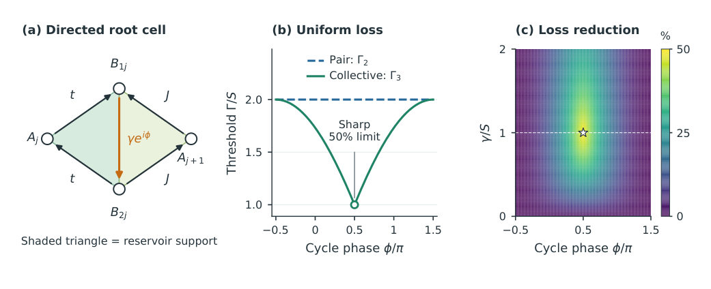
<figcaption class="paper-figure-caption"><b>Fig 1.</b> FIG. 1. Saturating the support-cost bound. (a) Directed cubic-root cell and the two reservoir-support triangles. (b) Exact thresholds at γ = S = t + J. The marked point saturates the 50% bound on loss reduction when two-mode reservoirs are replaced by three-mode reservoirs. (c) Exact reduction 1 −Γ3/Γ2 versus phase and γ/S. The architectures realize the same target at each point. Changing the directed-cycle phase changes that target.</figcaption>
</figure>
<figure class="paper-figure-card">
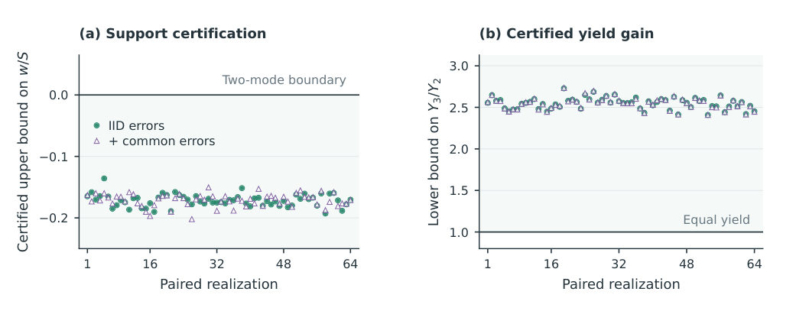
<figcaption class="paper-figure-caption"><b>Fig 2.</b> FIG. 2. Support certification and target yield on a connected chain. For each realization at L = 6 and κ/S = 1920, the same collective-reservoir device supplies both datasets. (a) Corrected upper witness bounds. Negativity excludes every effective pair-supported loss matrix in the fixed basis. (b) Lower bounds on Y3/Y2 from target-projection counts for both architectures. Each series contains 64 draws. The correlated series augments the same independent-error draws with a common relative phase and auxiliary detuning. All counts are synthetic. The bounds have 99% simultaneous coverage over all 5120 binomial groups, conditional on the stated calibration bounds.</figcaption>
</figure>
<figure class="paper-figure-card">
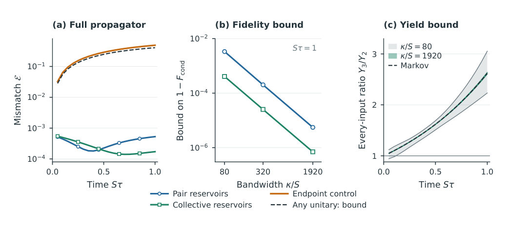
<figcaption class="paper-figure-caption"><b>Fig 3.</b> FIG. 3. Testing prescribed dynamics on the nominal six-cell device. (a) Propagator mismatch E at κ/S = 1920, including the endpoint-optimized coherent controller and the lower bound for every unitary. (b) Upper bounds r2 r on conditional infidelity for every input at Sτ = 1 versus bandwidth. The coupling capability changes with bandwidth as G ∝√κ. (c) Input-uniform enclosures of Y3/Y2 at two bandwidths. The dashed curve is the exact Markov ratio. Bands are matrix-norm bounds evaluated in the stated model, not statistical intervals. Curves connect the computed time points.</figcaption>
</figure>
</div>

<p><strong>Summary.</strong> This paper investigates the minimum unavoidable loss when simulating non-Hermitian quantum dynamics using reservoirs with limited physical mode access. By constructing a specific SSH chain, the authors prove that increasing the reservoir's accessible modes significantly lowers the theoretical loss bound, achieving a 50% reduction compared to simpler pair-supported models. This connects local reservoir engineering directly to measurable constraints on quantum process fidelity.</p>
<p><strong>Why it may be interesting.</strong> This work directly addresses the fundamental limitations imposed by realistic, finite-dimensional coupling environments (reservoirs) on the ability to simulate or control complex non-Hermitian quantum evolution, which is crucial for understanding open quantum systems.</p>
<details>
<summary>Detailed structure</summary>
<p><strong>Main problem.</strong> The research aims to determine the minimum loss cost required to accurately reproduce complex non-Hermitian quantum dynamics when the system is coupled to a finite-mode reservoir.</p>
<p><strong>Main result.</strong> The authors demonstrate that increasing the number of accessible physical modes in the reservoir (e.g., from pair-supported to three-mode) can reduce the minimum required loss bound by up to 50%.</p>
<p><strong>Method.</strong> The analysis employs established positive-matrix criteria and constructs a phase-controlled Su-Schrieffer-Heeger chain to test the theoretical loss bounds against measurable quantities like conditional fidelity and target yield.</p>
<p><strong>Model / system.</strong> The system involves non-Hermitian lattices exhibiting directional transport and exceptional dynamics, modeled using a no-jump generator $K = H -iM/2$. The dynamics are studied via reservoir coupling and finite-time emission protocols.</p>
<p><strong>Key observables.</strong> Loss Cost, Conditional Fidelity ($F_{	ext{cond}}$), Target Yield ($Y$), and the ratio of yields ($Y_3/Y_2$).</p>
<p><strong>Important parameters / regimes.</strong> The comparison is drawn between pair-supported ($\Gamma_2$) and three-mode ($\Gamma_3$) reservoir supports; the reduction factor approaches 50% with cycle-phase control.</p>
<p><strong>Assumptions / limitations.</strong> The analysis involves comparing the bound derived from pair-supported matrices versus those achievable with three-mode reservoirs, and it distinguishes between reproducing dynamics versus preparing a single final state.</p>
<p><strong>Figures summary.</strong> Figure 1 illustrates the saturation of the support-cost bound, showing the 50% limit achieved by three-mode reservoirs. Figure 2 demonstrates support certification and target yield measurements on a connected chain.</p>
<p><strong>Paper structure.</strong> The paper establishes the theoretical framework by defining the loss cost based on reservoir support, constructs a specific physical model (cubic-root SSH chain) to test the bounds, and then uses advanced propagation tests (like finite-time emission and propagator comparisons) to quantify the achievable loss reduction.</p>
</details>
<details>
<summary>Abstract</summary>
<p>The minimum loss required to reproduce non-Hermitian dynamics depends on how many physical modes each reservoir can address coherently. Established positive-matrix criteria bound this cost. We construct a phase-controlled cubic-root Su-Schrieffer-Heeger chain in which three-mode reservoirs attain the unrestricted passivity threshold throughout its phase diagram and halve the minimum pair-supported loss at a tuned point. The bound constrains exact conditional trajectories, including time-dependent Markov controls, rather than preparation of one final state. A connected-chain protocol tests effective reservoir support through calibrated finite-time emission. Full system-auxiliary propagation then bounds conditional fidelity and target yield for every one-particle input. A coherent controller that accurately prepares the selected endpoint fails this propagator test. A singular-value bound excludes every unitary realization of the same conditional map. These results connect local reservoir access to a measurable loss cost for prescribed dynamics.</p>
</details>
<p><sub><a href="#top">↑ back to top</a></sub></p>

<p><a id="paper-2609.14623"></a></p>
<h3 id="thermodynamic-realizability-of-hidden-markov-processes-attainment-observable-certificates-and-the-price-of-architecture"><a href="http://arxiv.org/abs/2609.14623v1">Thermodynamic Realizability of Hidden Markov Processes: Attainment, Observable Certificates, and the Price of Architecture</a></h3>
<p><strong>Authors:</strong> Murad Aznagulov<br>
<strong>Type:</strong> theory · <strong>Category:</strong> statistical mechanics · <strong>PDF:</strong> <a href="https://arxiv.org/pdf/2609.14623v1">https://arxiv.org/pdf/2609.14623v1</a><br>
<strong>Analysis basis:</strong> full PDF text, analyzed in chunks
<strong>Topic relevance:</strong> <code>correlated / nonlocal dissipation</code> <strong>3/5</strong> · <code>driven-dissipative phase transition</code> <strong>3/5</strong> · <code>non-equilibrium universality</code> <strong>3/5</strong> · <code>quantum measurements</code> <strong>3/5</strong> · <code>Keldysh / 2PI / non-Gaussian methods</code> <strong>2/5</strong> · <code>methods for driven-dissipative</code> <strong>2/5</strong> · <code>analog quantum simulation</code> <strong>1/5</strong></p>
<div class="figure-strip-hint">↔ Scroll figures horizontally</div>
<div class="paper-figures-scroll">
<figure class="paper-figure-card">
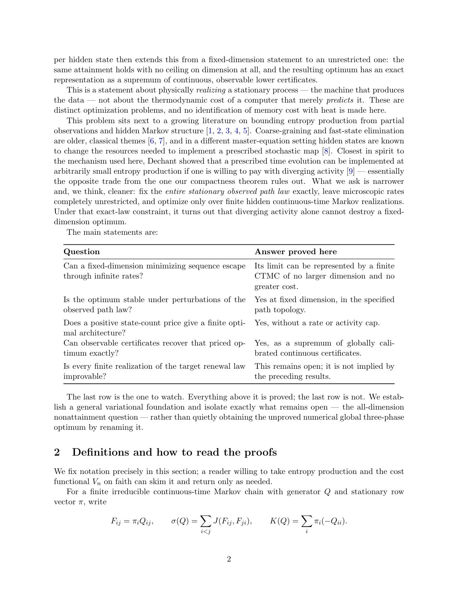
<figcaption class="paper-figure-caption"><b>Fig 1.</b> Low-resolution page preview, page 2</figcaption>
</figure>
<figure class="paper-figure-card">
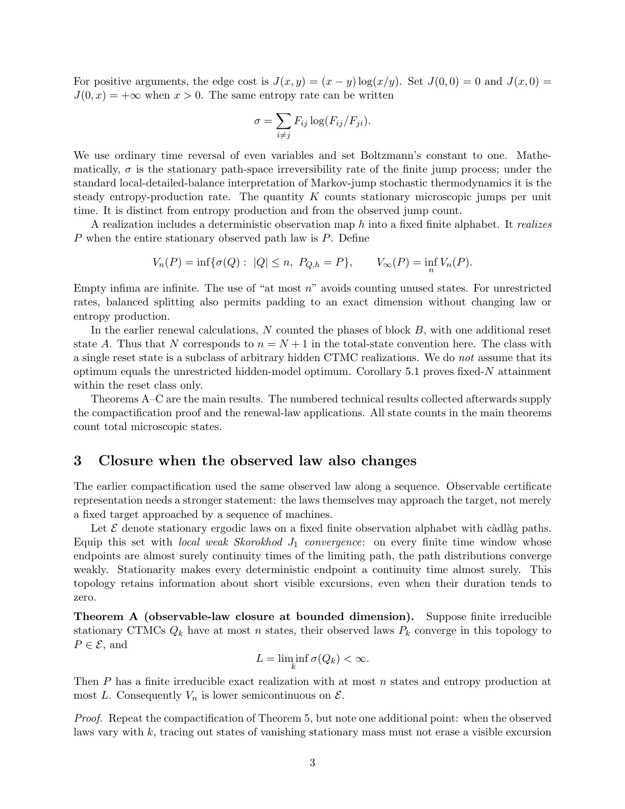
<figcaption class="paper-figure-caption"><b>Fig 2.</b> Low-resolution page preview, page 3</figcaption>
</figure>
<figure class="paper-figure-card">
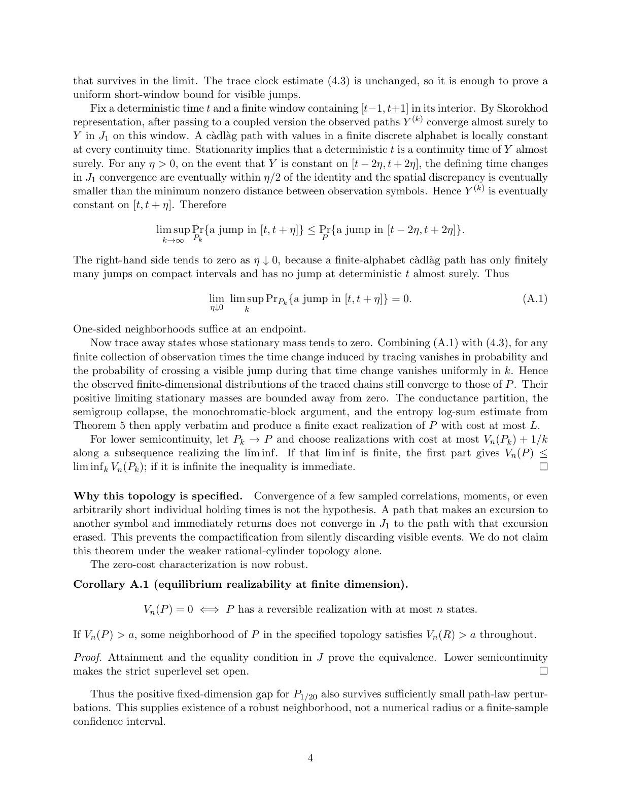
<figcaption class="paper-figure-caption"><b>Fig 3.</b> Low-resolution page preview, page 4</figcaption>
</figure>
<figure class="paper-figure-card">
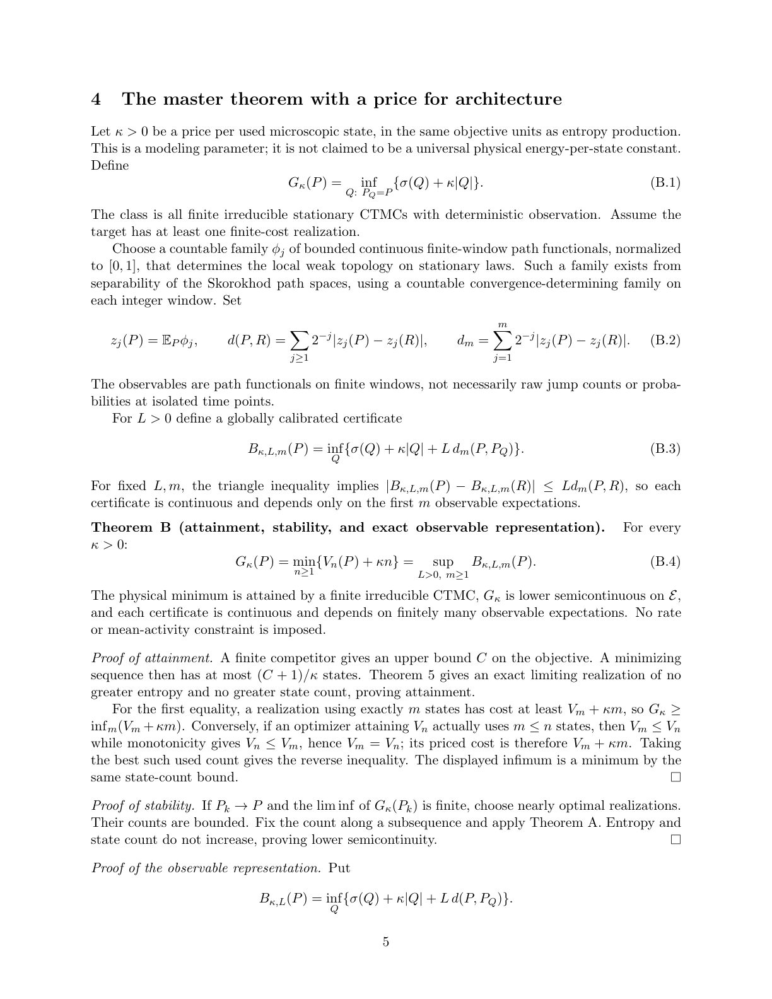
<figcaption class="paper-figure-caption"><b>Fig 4.</b> Low-resolution page preview, page 5</figcaption>
</figure>
<figure class="paper-figure-card">
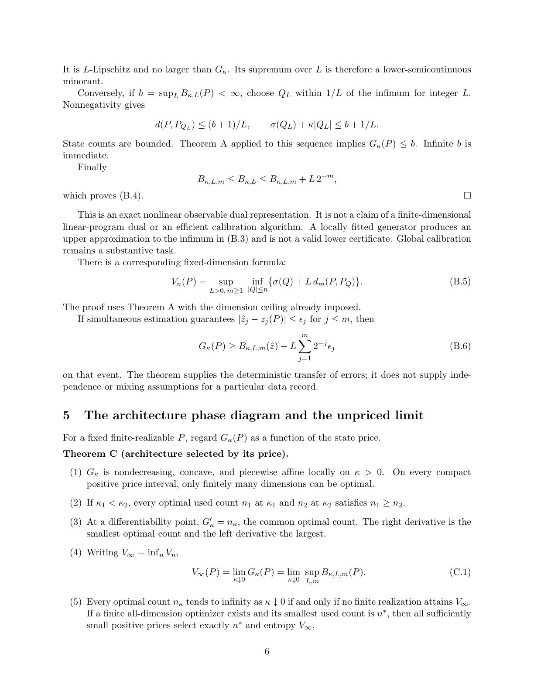
<figcaption class="paper-figure-caption"><b>Fig 5.</b> Low-resolution page preview, page 6</figcaption>
</figure>
</div>

<p><strong>Summary.</strong> This theoretical work characterizes the minimum dissipation required to model an observed stochastic process using a finite Markov machine. By introducing a cost for each hidden state, the authors derive a powerful dual representation that governs the trade-off between physical dissipation and model complexity. The results provide deep insights into the limitations of finite models attempting to capture true, potentially infinite-dimensional, physical dynamics.</p>
<p><strong>Why it may be interesting.</strong> The rigorous connection between thermodynamic irreversibility (entropy production) and the minimal complexity (hidden state count) required to model a process is highly relevant to understanding open quantum systems and measurement back-action in quantum thermodynamics.</p>
<details>
<summary>Detailed structure</summary>
<p><strong>Main problem.</strong> The paper addresses the fundamental question of determining the minimum dissipative finite Markov machine required to exactly reproduce a given observed stochastic process.</p>
<p><strong>Main result.</strong> It establishes that the minimum cost is attained at fixed state counts and provides a generalized cost function incorporating an 'architecture price' ($\kappa$) that allows for an exact, observable dual representation of the minimum dissipation.</p>
<p><strong>Method.</strong> The authors employ techniques from non-equilibrium statistical mechanics, utilizing concepts like entropy production, lower semicontinuity, and constructing observable certificates based on path expectations.</p>
<p><strong>Model / system.</strong> The model centers on Hidden Markov Processes (HMPs), specifically continuous-time Markov chains (CTMCs) whose underlying dynamics are hidden but whose stationary path law $P$ is observed. The analysis compares the true minimum cost to costs achievable by finite-dimensional approximations.</p>
<p><strong>Key observables.</strong> Entropy production rate ($\sigma(Q)$), the cost functional $V_n(P)$, and the generalized cost $G_\kappa(P)$.</p>
<p><strong>Important parameters / regimes.</strong> The price per hidden state ($\kappa$), the fixed hidden dimension ($n$), and the target process parameters (e.g., $q$ for the renewal family $P_q$).</p>
<p><strong>Assumptions / limitations.</strong> The primary assumptions involve the existence of a finite-dimensional realization and the ability to define the cost via observable path expectations. A key open question concerns the zero-price limit ($\kappa 	o 0$).</p>
<p><strong>Figures summary.</strong> No specific figures were summarized, but the text references mathematical equations detailing dwell densities and partial-fraction decompositions for specific process families.</p>
<p><strong>Paper structure.</strong> The paper progresses by first establishing the attainment of the cost at fixed dimensions, then introducing the state-price $\kappa$ to define the generalized cost $G_\kappa(P)$, deriving the dual representation via observable certificates, and finally applying this framework to specific processes like the two-block renewal family $P_q$ to prove strict positive minimal dissipation.</p>
</details>
<details>
<summary>Abstract</summary>
<p>What is the least dissipative finite Markov machine that can reproduce a given stochastic process exactly? A basic compactness worry is that a minimizing sequence might lower its cost only by sending microscopic rates to infinity, never converging to an actual finite-rate machine. We prove that this escape is impossible at fixed hidden dimension. States of vanishing stationary occupation can be traced out, and infinitely fast conductance classes can be contracted, without increasing entropy production or losing the limiting observed path law. Hence the exact-law cost $V_n(P)$ is attained and lower semicontinuous at every fixed state count, with no cap on rates or mean activity. Adding a positive price $κ$ per used hidden state yields an attained optimum over all finite dimensions and an exact representation by globally calibrated lower certificates built from finitely many observable path expectations. The lower envelope $G_κ(P)=\min_n[V_n(P)+κn]$ defines an architecture phase diagram whose slope is the selected state count; divergence of that count as $κ\downarrow0$ is equivalent to failure of any finite machine to attain the all-dimension infimum $V_\infty(P)$. For the two-block renewal family $P_q$, we derive complete finite-dimensional phase-type cancellation equations, give an explicit four-phase counterexample to a tempting restricted parameterization, and prove strictly positive minimal dissipation at every feasible finite dimension for all $0<q<1$. These results reduce the remaining problem to one sharp question: can growing hidden architecture drive the dissipation of $P_q$ to its all-dimension infimum without any finite optimizer, and in the strongest scenario, to zero?</p>
</details>
<p><sub><a href="#top">↑ back to top</a></sub></p>

<p><a id="paper-2609.14556"></a></p>
<h3 id="conserved-quantities-in-a-bosonic-tight-binding-chain-with-non-hermitian-quartic-terms"><a href="http://arxiv.org/abs/2609.14556v1">Conserved quantities in a bosonic tight-binding chain with non-Hermitian quartic terms</a></h3>
<p><strong>Authors:</strong> Tetsuya Iwasaki, Hosho Katsura<br>
<strong>Type:</strong> theory · <strong>Category:</strong> statistical mechanics · <strong>PDF:</strong> <a href="https://arxiv.org/pdf/2609.14556v1">https://arxiv.org/pdf/2609.14556v1</a><br>
<strong>Analysis basis:</strong> full PDF text, analyzed in chunks
<strong>Topic relevance:</strong> <code>analog quantum simulation</code> <strong>3/5</strong> · <code>driven-dissipative phase transition</code> <strong>3/5</strong> · <code>Keldysh / 2PI / non-Gaussian methods</code> <strong>2/5</strong> · <code>methods for driven-dissipative</code> <strong>2/5</strong> · <code>non-equilibrium universality</code> <strong>2/5</strong> · <code>Frenkel-Kontorova</code> <strong>1/5</strong> · <code>correlated / nonlocal dissipation</code> <strong>1/5</strong> · <code>scars &amp; prethermalization</code> <strong>1/5</strong></p>
<div class="figure-strip-hint">↔ Scroll figures horizontally</div>
<div class="paper-figures-scroll">
<figure class="paper-figure-card">
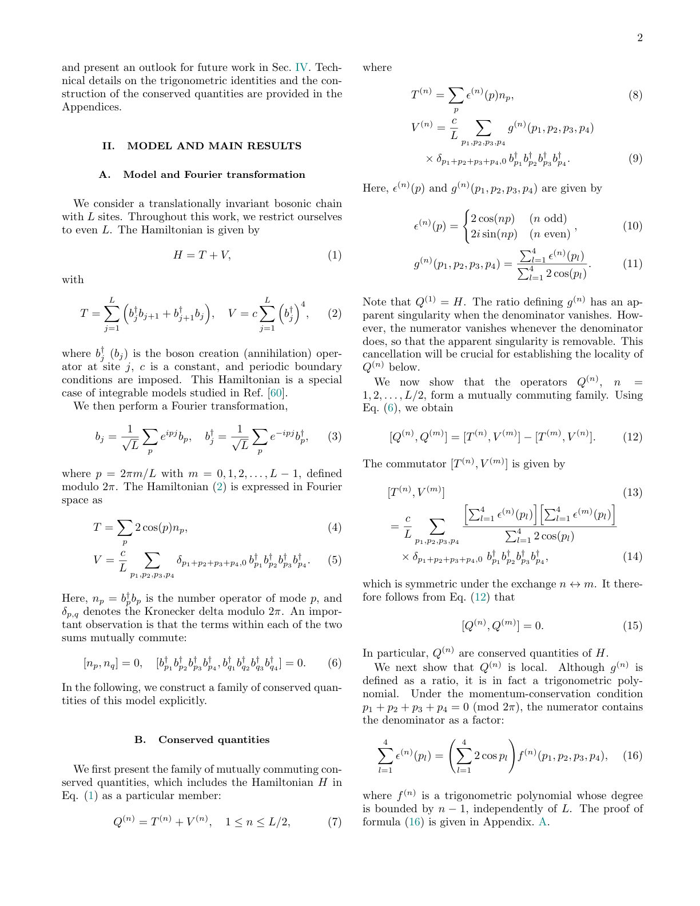
<figcaption class="paper-figure-caption"><b>Fig 1.</b> Low-resolution page preview, page 2</figcaption>
</figure>
<figure class="paper-figure-card">
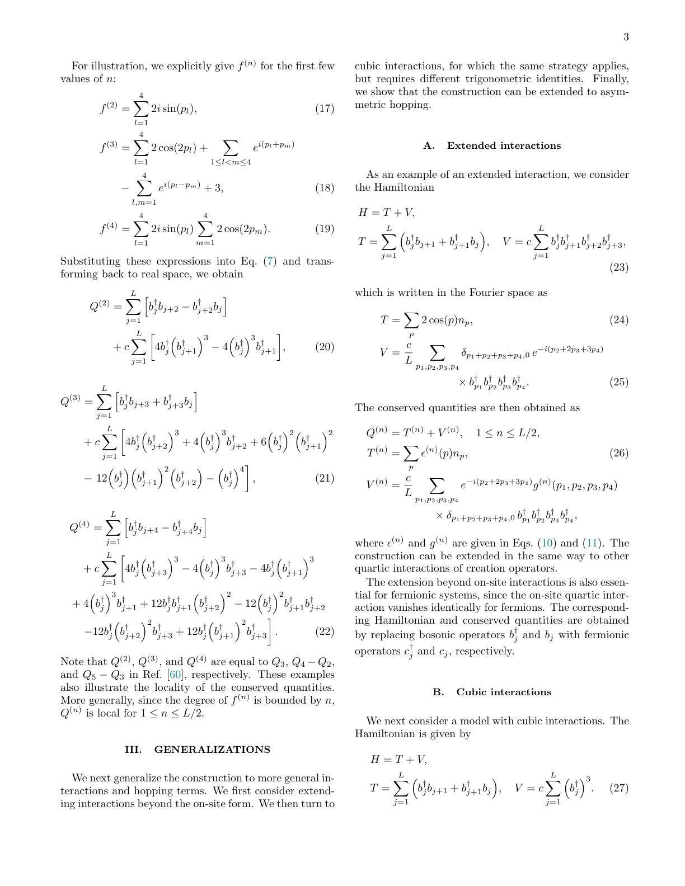
<figcaption class="paper-figure-caption"><b>Fig 2.</b> Low-resolution page preview, page 3</figcaption>
</figure>
<figure class="paper-figure-card">
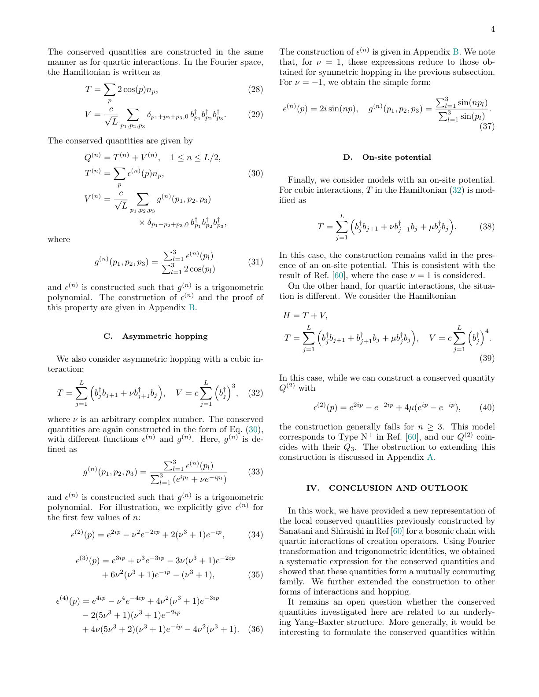
<figcaption class="paper-figure-caption"><b>Fig 3.</b> Low-resolution page preview, page 4</figcaption>
</figure>
<figure class="paper-figure-card">
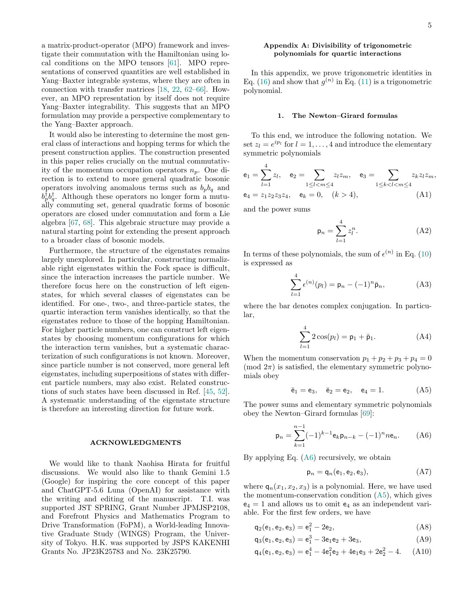
<figcaption class="paper-figure-caption"><b>Fig 4.</b> Low-resolution page preview, page 5</figcaption>
</figure>
<figure class="paper-figure-card">
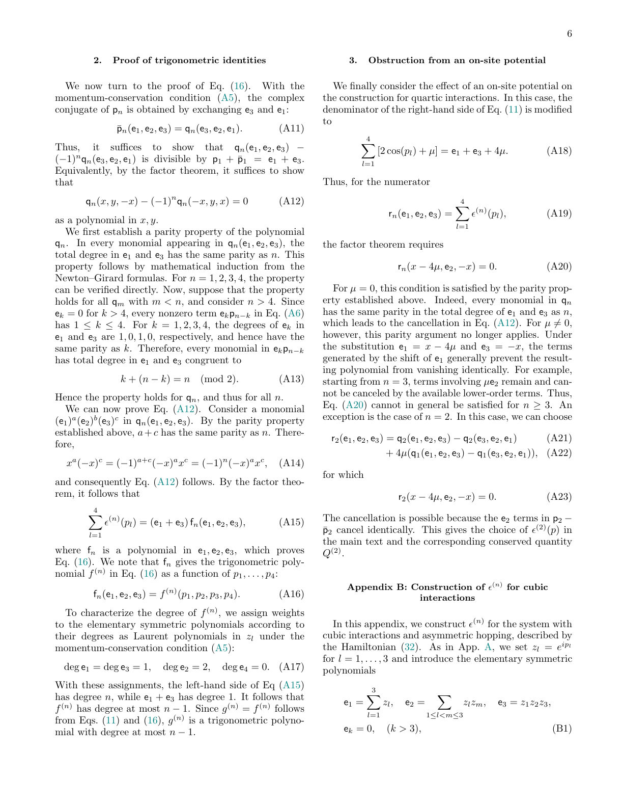
<figcaption class="paper-figure-caption"><b>Fig 5.</b> Low-resolution page preview, page 6</figcaption>
</figure>
</div>

<p><strong>Summary.</strong> This work develops a general mathematical framework to find local conserved quantities in non-Hermitian bosonic chains with complex interactions. By using Fourier transforms and algebraic identities, the authors prove that these quantities commute, providing a powerful tool for analyzing the dynamics of such open quantum systems. This advances the understanding of integrability in non-Hermitian many-body physics.</p>
<p><strong>Why it may be interesting.</strong> The focus on non-Hermitian systems and finding exact conserved quantities is crucial for understanding non-equilibrium dynamics, dissipation, and the stability of quantum states in open quantum systems, linking directly to modern AMO and quantum transport theory.</p>
<details>
<summary>Detailed structure</summary>
<p><strong>Main problem.</strong> The paper investigates the existence and construction of local conserved quantities in non-Hermitian bosonic lattice systems, particularly when the underlying Yang-Baxter structure is unknown.</p>
<p><strong>Main result.</strong> The authors provide a unified framework to systematically derive a family of mutually commuting local conserved quantities for bosonic chains with quartic interactions, extending the construction to include cubic terms and asymmetric hopping.</p>
<p><strong>Method.</strong> The primary methods involve using Fourier transformation and trigonometric identities to construct conserved charges, and employing advanced algebraic techniques like Newton-Girard formulas to prove necessary identities.</p>
<p><strong>Model / system.</strong> The model is a one-dimensional bosonic tight-binding chain described by a Hamiltonian containing hopping terms (T) and various interaction terms (V), including quartic and cubic on-site interactions. The system is non-Hermitian.</p>
<p><strong>Key observables.</strong> Local conserved quantities, $Q(n)$, which are shown to form a mutually commuting family, and the Hamiltonian $H$ itself, which is $Q(1)$.</p>
<p><strong>Important parameters / regimes.</strong> The interaction strength ($c$ or $\mu$), the hopping asymmetry parameter ($
u$), and the order of the interaction (quartic vs. cubic).</p>
<p><strong>Assumptions / limitations.</strong> The construction relies on the mutual commutativity of momentum occupation operators ($n_p$), and the analysis often proceeds by assuming specific forms for the interactions (e.g., $\mu=0$ vs. $\mu 
eq 0$).</p>
<p><strong>Paper structure.</strong> The paper first establishes the construction for the quartic model, proving mutual commutativity. It then systematically generalizes this framework to include cubic interactions, asymmetric hopping, and on-site potentials, detailing the mathematical machinery (like elementary symmetric polynomials) required for the construction.</p>
</details>
<details>
<summary>Abstract</summary>
<p>We investigate local conserved quantities in non-Hermitian bosonic lattice systems whose underlying Yang--Baxter structure remains unclear. Focusing on a one-dimensional bosonic chain with quartic interactions of creation operators, we provide a new representation of the local conserved quantities previously constructed by Sanatani and Shiraishi. Using Fourier transformation and trigonometric identities, we systematically derive these conserved quantities and show directly that they form a mutually commuting family. We further extend the construction to interactions extending beyond a single site, cubic interactions, asymmetric hopping, and an on-site potential. Our results provide a unified framework for constructing and characterizing local conserved quantities in this class of non-Hermitian many-body systems.</p>
</details>
<p><sub><a href="#top">↑ back to top</a></sub></p>

<p><a id="paper-2609.14341"></a></p>
<h3 id="engineering-non-markovianity-from-spectral-shaping-of-bosonic-and-fermionic-baths"><a href="http://arxiv.org/abs/2609.14341v1">Engineering non-Markovianity from spectral shaping of bosonic and fermionic baths</a></h3>
<p><strong>Authors:</strong> Si Luo, Cun Long, Daochi Zhang, Massimiliano Di Ventra, Xiao Zheng<br>
<strong>Type:</strong> theory · <strong>Category:</strong> other · <strong>PDF:</strong> <a href="https://arxiv.org/pdf/2609.14341v1">https://arxiv.org/pdf/2609.14341v1</a><br>
<strong>Analysis basis:</strong> full PDF text, analyzed in chunks
<strong>Topic relevance:</strong> <code>correlated / nonlocal dissipation</code> <strong>3/5</strong> · <code>Keldysh / 2PI / non-Gaussian methods</code> <strong>2/5</strong> · <code>driven-dissipative phase transition</code> <strong>2/5</strong> · <code>methods for driven-dissipative</code> <strong>2/5</strong> · <code>analog quantum simulation</code> <strong>1/5</strong> · <code>interference shaping light</code> <strong>1/5</strong> · <code>non-equilibrium universality</code> <strong>1/5</strong> · <code>quantum measurements</code> <strong>1/5</strong> · <code>scars &amp; prethermalization</code> <strong>1/5</strong></p>
<div class="figure-strip-hint">↔ Scroll figures horizontally</div>
<div class="paper-figures-scroll">
<figure class="paper-figure-card">
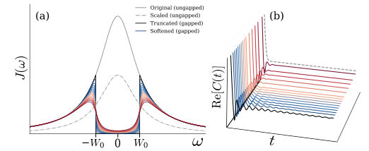
<figcaption class="paper-figure-caption"><b>Fig 1.</b> Figure 1: Spectrum truncation and correlation functions for a fermionic bath. (a) Original bath spectral function (gray), truncated spectral function with a band gap of width 2W0 (black), softened gapped spectral functions (colored), and a scaled ungapped spectral function (gray dash-dot). All spec- tral functions have the same area below the curves except the original one. (b) Real part of the corresponding environment correlation functions.</figcaption>
</figure>
<figure class="paper-figure-card">
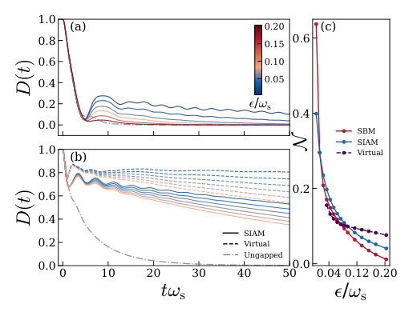
<figcaption class="paper-figure-caption"><b>Fig 2.</b> Figure 2: Non-Markovianity control via environmental spec- trum engineering. Trace distance dynamics D(t) for (a) an SBM and (b) an SIAM at selected softening widths ϵ (color- coded). The parameter ϵ controls the band edge sharpness [cf. Eq. (5)]. The gray dash-dotted lines in (a) and (b) provide a benchmark for a scaled Lorentzian (ungapped) bath spec- tral function. (c) Non-Markovianity measure N versus ϵ for both models. The purple curve shows results from a virtual SIAM simulation with the fermionic parity replaced by the bosonic parity within the HEOM method. Model parameters are given in the main text.</figcaption>
</figure>
<figure class="paper-figure-card">
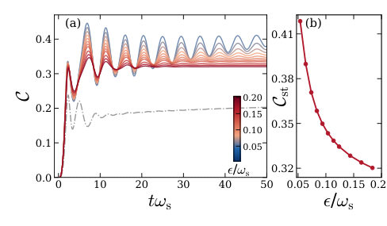
<figcaption class="paper-figure-caption"><b>Fig 3.</b> Figure 3: Concurrence dynamics of two spins coupled to a common bath with tunable softening width ϵ. (a) Time evo- lution for selected ϵ (colored) and the benchmark for a scaled ungapped bath (gray dash-dotted). (b) Steady-state concur- rence Cst as a function of ϵ/ωs. Model parameters are given in the main text.</figcaption>
</figure>
<figure class="paper-figure-card">
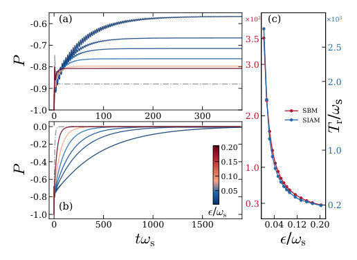
<figcaption class="paper-figure-caption"><b>Fig 4.</b> Figure 4: Relaxation dynamics of spin polarization in (a) an SBM and (b) an SIAM for selected softening widths ϵ. Gray dash-dotted lines are benchmarks for the scaled ungapped bath. (c) Relaxation time Tr versus ϵ for both models; the two curves exhibit a similar dependence on ϵ up to an overall scale factor. Model parameters are given in the main text.</figcaption>
</figure>
</div>

<p><strong>Summary.</strong> This paper demonstrates that non-Markovianity, a key resource in quantum physics, can be engineered by modifying the spectral density of the environment bath. By introducing a controlled band gap via spectral shaping, the authors show they can tune the memory effects in both bosonic and fermionic systems. This technique offers a powerful theoretical tool for designing quantum devices with specific memory characteristics.</p>
<p><strong>Why it may be interesting.</strong> This work provides a concrete, physically implementable mechanism (spectral engineering) to control a fundamental resource (memory) in open quantum systems, which is highly relevant to quantum control and quantum information processing.</p>
<details>
<summary>Detailed structure</summary>
<p><strong>Main problem.</strong> The paper addresses the challenge of engineering non-Markovianity—the memory effect in a system's evolution—which is crucial for quantum technologies but difficult to control.</p>
<p><strong>Main result.</strong> Introducing a band gap by spectrally shaping the bath environment (both bosonic and fermionic) provides a direct, tunable route to achieving strong non-Markovian dynamics and slowing down relaxation times.</p>
<p><strong>Method.</strong> The core method involves modifying the bath spectral density $J(\omega)$ by applying a sharp band-gap truncation followed by a smooth edge-softening convolution protocol.</p>
<p><strong>Model / system.</strong> The study analyzes open quantum systems, specifically using the Spin-Boson Model (SBM) and the Single-Impurity Anderson Model (SIAM), coupled to non-interacting bosonic or fermionic baths.</p>
<p><strong>Key observables.</strong> Non-Markovianity measure ($N$), trace distance ($D(t)$), Concurrence (for two-spin setups), and spin polarization relaxation ($P(t)$).</p>
<p><strong>Important parameters / regimes.</strong> The gap energy ($W_0$), the softening width ($\epsilon$), and the temperature ($T$) relative to $W_0$ are key tunable parameters.</p>
<p><strong>Assumptions / limitations.</strong> The analysis relies on the ability to analytically continue the spectral density to the complex plane and assumes the spectral shaping protocol preserves the total hybridization strength.</p>
<p><strong>Figures summary.</strong> Figures illustrate spectral truncation and correlation functions for fermionic baths, and show the time evolution of the trace distance and non-Markovianity measure ($N$) as a function of the softening width $\epsilon$.</p>
<p><strong>Paper structure.</strong> The paper first introduces the concept of non-Markovianity and the role of the bath correlation function $C(t)$. It then details the spectral shaping technique using band-gap truncation and edge-softening, demonstrating its applicability to both bosonic and fermionic baths, and finally presents numerical results showing the control over memory effects.</p>
</details>
<details>
<summary>Abstract</summary>
<p>Non-Markovianity is the property that a physical system's future state depends on its previous dynamical history, namely the system has memory of its past. It is a key resource for quantum technologies but it is difficult to engineer without specific strategies. Here, we show that introducing a band gap in the environmental spectral density of both bosonic and fermionic baths provides a direct route to tuning non-Markovianity over a wide range. We demonstrate this effect by means of numerical simulations across bosonic and fermionic environments and discuss experimental tests of our predictions.</p>
</details>
<p><sub><a href="#top">↑ back to top</a></sub></p>

<p><a id="paper-2609.14375"></a></p>
<h3 id="quantum-synchronization-a-tutorial-guide"><a href="http://arxiv.org/abs/2609.14375v1">Quantum synchronization: A tutorial guide</a></h3>
<p><strong>Authors:</strong> Sourabh Lahiri, Shamik Gupta<br>
<strong>Type:</strong> theory · <strong>Category:</strong> other · <strong>PDF:</strong> <a href="https://arxiv.org/pdf/2609.14375v1">https://arxiv.org/pdf/2609.14375v1</a><br>
<strong>Analysis basis:</strong> full PDF text, analyzed in chunks
<strong>Topic relevance:</strong> <code>driven-dissipative phase transition</code> <strong>3/5</strong> · <code>methods for driven-dissipative</code> <strong>3/5</strong> · <code>Keldysh / 2PI / non-Gaussian methods</code> <strong>2/5</strong> · <code>correlated / nonlocal dissipation</code> <strong>2/5</strong> · <code>non-equilibrium universality</code> <strong>2/5</strong> · <code>analog quantum simulation</code> <strong>1/5</strong> · <code>quantum measurements</code> <strong>1/5</strong></p>
<div class="figure-strip-hint">↔ Scroll figures horizontally</div>
<div class="paper-figures-scroll">
<figure class="paper-figure-card">
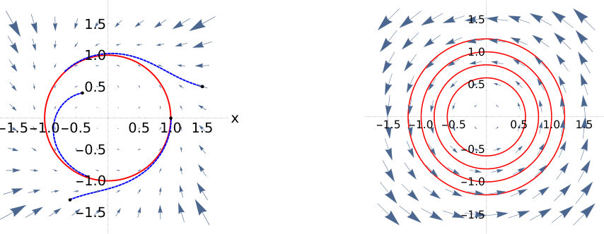
<figcaption class="paper-figure-caption"><b>Fig 1.</b> Figure 1: (a) A stable limit cycle (red solid line) produced from Eq. (3). Different initial conditions (blue dashed lines) originating close to the limit cycle asymptotically approach it in course of time. The underlying vector field (˙x, ˙y) is indicated by the arrows. (b) A family of concentric circles produced by the set of linear differential equations ˙x = −ay and ˙y = ax, with a &gt; 0. None of these orbits is a limit cycle.</figcaption>
</figure>
<figure class="paper-figure-card">
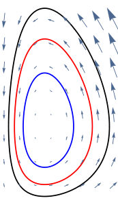
<figcaption class="paper-figure-caption"><b>Fig 2.</b> Figure 2: Orbits obtained from Eq. (4), by varying the initial conditions (x(0),y(0)). A point originating close to one of the closed orbits forms another closed orbit. The underlying vector field (˙x, ˙y) is indicated by the arrows.</figcaption>
</figure>
<figure class="paper-figure-card">
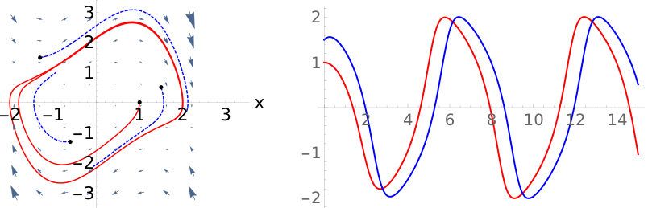
<figcaption class="paper-figure-caption"><b>Fig 3.</b> Figure 3: For the van der Pol oscillator, Eq. (6), (a) shows trajectories traced out in the (x,y)- plane starting from different initial conditions, overlaid on the vector field (˙x, ˙y), with µ = 1. (b) The variation of x with time and its approach towards a periodic motion, for two different initial conditions.</figcaption>
</figure>
<figure class="paper-figure-card">
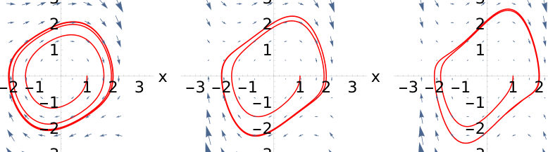
<figcaption class="paper-figure-caption"><b>Fig 4.</b> Figure 4: For the van der Pol oscillator, Eq. (6), the figure shows the change in the shape of the limit cycle for different values of the parameter µ (left to right: µ = 0.3, 0.6, 0.9). In each case, the dynamics has been run for a long-enough time in order to reveal the approximate outline of the limit cycle. As µ increases, the shape gets increasingly distorted from that of a circle, and there is an increase in the area under the cycle.</figcaption>
</figure>
<figure class="paper-figure-card">
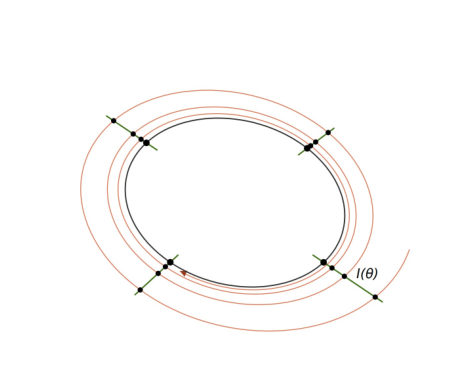
<figcaption class="paper-figure-caption"><b>Fig 5.</b> Figure 5: Construction of isochrones I(θ). An initial phase-space point sufficiently close to the limit cycle in course of time traces out an orbit that asymptotically approaches the limit cycle. As the point traverses this orbit, we observe its successive positions in time only stroboscopically, i.e., at times t = kT ; k = 1,2,3,.... The limit of this sequence of points as k →∞is a point on the limit cycle. The aforementioned successive positions are marked by black filled circles.</figcaption>
</figure>
</div>

<p><strong>Summary.</strong> This tutorial provides a systematic guide to analyzing synchronization in complex systems, bridging classical nonlinear dynamics with quantum mechanics. It develops a methodology using phase-space analysis and Lindblad master equations to characterize how coupled oscillators achieve synchronized states quantum mechanically. The work is valuable for researchers needing a unified, analytical toolkit for quantum synchronization problems.</p>
<p><strong>Why it may be interesting.</strong> This is highly relevant as it unifies techniques from nonlinear dynamics, open quantum systems, and quantum optics to tackle the complex problem of collective quantum behavior.</p>
<details>
<summary>Detailed structure</summary>
<p><strong>Main problem.</strong> To develop a systematic framework for analyzing synchronization in both classical and quantum dynamical systems.</p>
<p><strong>Main result.</strong> The paper establishes a comprehensive methodology bridging classical nonlinear dynamics (limit cycles, phase locking) with the quantum description of open systems.</p>
<p><strong>Method.</strong> It systematically builds the analysis by first using amplitude-phase dynamics for classical systems, and then extending this using Lindblad master equations and phase-space methods for quantum systems.</p>
<p><strong>Model / system.</strong> The analysis covers interacting nonlinear oscillators, ranging from classical limit-cycle oscillators (like the van der Pol oscillator) to quantum limit-cycle oscillators, including spin systems.</p>
<p><strong>Key observables.</strong> Phase and frequency relations, order parameter (Kuramoto model), synchronization measures, and the vector $\vec{a}$ characterizing the density matrix.</p>
<p><strong>Important parameters / regimes.</strong> Coupling strength, dissipation rate ($\mu$ in van der Pol), and the quantum noise/dissipation parameters ($\gamma_{em}$).</p>
<p><strong>Assumptions / limitations.</strong> The approach is pedagogical, focusing on deriving analytical tools rather than surveying existing literature, and it assumes the applicability of phase-space methods for quantum descriptions.</p>
<p><strong>Figures summary.</strong> Figures illustrate the concept of stable limit cycles in classical phase space (e.g., van der Pol oscillator) and the geometric representation of quantum states on the Bloch sphere.</p>
<p><strong>Paper structure.</strong> The structure moves logically from classical nonlinear dynamics (limit cycles, phase separation) to the mathematical formalism of open quantum systems (Lindblad equation) and finally applies these tools to analyze quantum synchronization.</p>
</details>
<details>
<summary>Abstract</summary>
<p>Synchronization is a collective phenomenon in which interacting nonlinear oscillators develop a persistent relation between their phases and frequencies. In quantum systems, its description requires connecting the classical dynamics of limit-cycle oscillators with quantum fluctuations, dissipation, and the notion of phase. In this tutorial review, we offer a systematic framework for analyzing synchronization in classical and quantum dynamical systems. Starting from amplitude-phase dynamics, we introduce successively topics of relevance, such as phase locking, the Adler equation, Arnold tongues, and the Kuramoto model, and use these concepts to analyze coupled oscillators and their stability. We then formulate the corresponding description for quantum limit-cycle oscillators using Lindblad master equations and phase-space methods, with explicit examples of two and many coupled oscillators. We further discuss noise, synchronization measures, and the extreme quantum regime, including synchronization in spin systems. The emphasis throughout is on analytical derivations and a practical methodology for identifying synchronized states, determining their stability, and characterizing synchronization in quantum systems. The review is designed as a self-contained guide from which we hope that students can learn the essential concepts and techniques, while researchers can readily find the analytical tools and methodological insights needed to approach new synchronization problems.</p>
</details>
<p><sub><a href="#top">↑ back to top</a></sub></p>

<p><a id="paper-2609.15632"></a></p>
<h3 id="a-nonrecursive-lindblad-quantization-of-dissipative-polynomial-dynamics"><a href="http://arxiv.org/abs/2609.15632v1">A Nonrecursive Lindblad Quantization of Dissipative Polynomial Dynamics</a></h3>
<p><strong>Authors:</strong> Tingfei Li<br>
<strong>Type:</strong> theory · <strong>Category:</strong> other · <strong>PDF:</strong> <a href="https://arxiv.org/pdf/2609.15632v1">https://arxiv.org/pdf/2609.15632v1</a><br>
<strong>Analysis basis:</strong> full PDF text, analyzed in chunks
<strong>Topic relevance:</strong> <code>driven-dissipative phase transition</code> <strong>3/5</strong> · <code>methods for driven-dissipative</code> <strong>3/5</strong> · <code>Keldysh / 2PI / non-Gaussian methods</code> <strong>2/5</strong> · <code>non-equilibrium universality</code> <strong>2/5</strong> · <code>analog quantum simulation</code> <strong>1/5</strong> · <code>correlated / nonlocal dissipation</code> <strong>1/5</strong> · <code>quantum measurements</code> <strong>1/5</strong></p>
<div class="figure-strip-hint">↔ Scroll figures horizontally</div>
<div class="paper-figures-scroll">
<figure class="paper-figure-card">
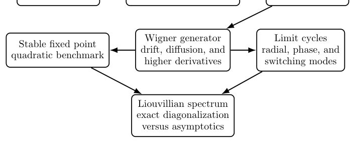
<figcaption class="paper-figure-caption"><b>Fig 1.</b> FIG. 1. Construction and large-S validation. A polynomial flow is decomposed into homogeneous components, and explicit formal GKSL blocks reproduce each component at leading order. Mean-field reduction gives the classical drift as S →∞. Wigner analysis and symmetry-resolved diagonalization then test classical fixed points, limit cycles, radial relaxation, and the suppression of inter-ring switching.</figcaption>
</figure>
<figure class="paper-figure-card">
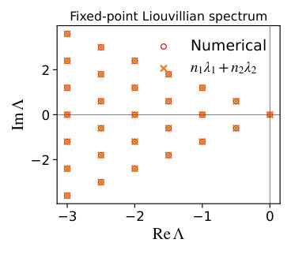
<figcaption class="paper-figure-caption"><b>Fig 2.</b> FIG. 2. Stable fixed-point benchmark. Top: classical linear flow. Bottom: low-lying Liouvillian eigenvalues from a Fock- space truncation at N = 30 and the rapidity lattice generated by −0.5 ± 0.6i.</figcaption>
</figure>
<figure class="paper-figure-card">
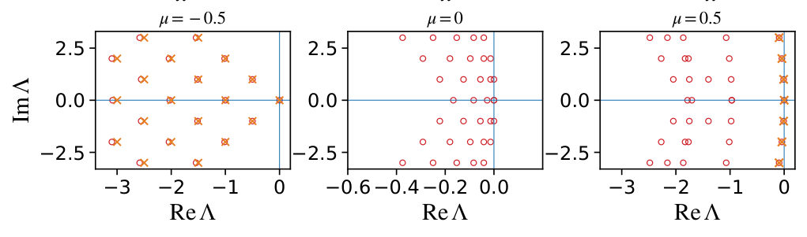
<figcaption class="paper-figure-caption"><b>Fig 3.</b> FIG. 3. Hopf scan for the minimal cascade completion. Top: classical portraits below, at, and above the bifurcation. Bottom: finite-S spectra at S = 12. Red open circles are exact charge-resolved quantum-Liouvillian eigenvalues; yellow crosses give the large-S asymptotic values away from the critical point.</figcaption>
</figure>
<figure class="paper-figure-card">
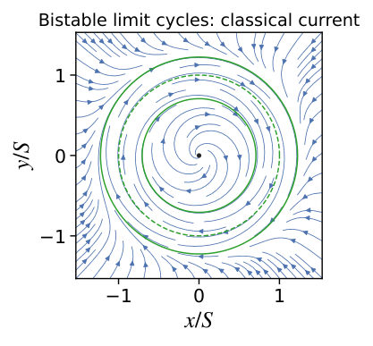
<figcaption class="paper-figure-caption"><b>Fig 4.</b> FIG. 4. Classical current for the bistable limit-cycle flow with (µ1, µ2, µ3) = (0.5, 1, 1.5) and ω = 1. Arrows show the local velocity direction. The green solid curves are stable limit cycles, whereas the green dashed curve is the unstable separatrix. Trajectories inside and outside the unstable middle ring are driven toward the inner and outer stable limit cycles, respectively.</figcaption>
</figure>
<figure class="paper-figure-card">
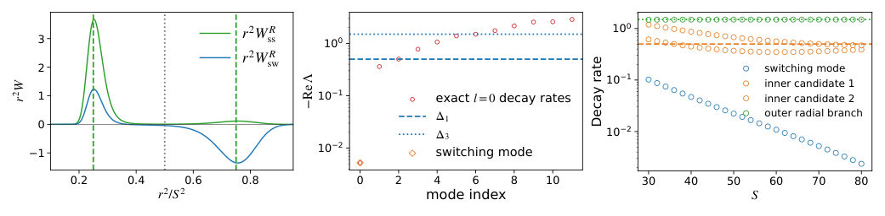
<figcaption class="paper-figure-caption"><b>Fig 5.</b> FIG. 5. Bistable-ring structure at S = 70. Left: the steady-state and switching right eigenfunctions are shown as r2W versus the common coordinate r2/S2, with r = |α|; vertical lines mark the inner stable ring, the separatrix, and the outer stable ring. Middle: population-sector decay rates in the l = 0 block, with the steady state at Λ = 0 omitted. Hollow circles show the exact decay rates, the dashed and dotted horizontal lines mark the local gaps ∆1 and ∆3, and the hollow diamond marks the slower inter-ring switching mode. Right: scaling of the switching mode with S.</figcaption>
</figure>
</div>

<p><strong>Summary.</strong> This paper introduces a novel, nonrecursive method to translate any planar polynomial dissipative classical flow into an explicit open quantum system described by the Lindblad equation. By algebraically constructing the Hamiltonian and collapse operators based on the classical drift's homogeneous components, it provides a systematic route to model quantum dissipation. The method is validated by showing that the quantum system's spectral properties recover key classical dynamical features in the semiclassical limit.</p>
<p><strong>Why it may be interesting.</strong> This work provides a powerful, systematic, and non-recursive tool for designing open quantum systems whose semiclassical dynamics are prescribed by known classical dissipative systems, which is highly relevant for quantum optics and open quantum dynamics.</p>
<details>
<summary>Detailed structure</summary>
<p><strong>Main problem.</strong> The paper develops a direct and nonrecursive mathematical construction to map an arbitrary planar polynomial dissipative classical flow to an explicit open quantum system described by the Lindblad master equation.</p>
<p><strong>Main result.</strong> The construction successfully generates the necessary Hamiltonian and jump operators such that the quantum evolution reproduces the classical dissipative dynamics in the large-amplitude (semiclassical) limit.</p>
<p><strong>Method.</strong> The method involves algebraically constructing the Hamiltonian and collapse operators by decomposing the classical drift into homogeneous components and applying a mean-field approximation, thereby avoiding complex recursive cancellations.</p>
<p><strong>Model / system.</strong> The model is a planar dissipative classical flow $\dot{\alpha} = h(\alpha, \alpha^*)$, which is mapped onto an open quantum system governed by the Gorini-Kossakowski-Sudarshan-Lindblad (GKSL) master equation.</p>
<p><strong>Key observables.</strong> Liouvillian spectra, classical relaxation exponents, radial Floquet exponents, and neutral phase directions.</p>
<p><strong>Important parameters / regimes.</strong> The large-amplitude limit ($|\alpha| \sim S \to \infty$) is crucial for the semiclassical correspondence.</p>
<p><strong>Assumptions / limitations.</strong> The correspondence is asymptotic, relying on the mean-field factorization and retaining only the leading order terms in the large-$S$ limit, meaning it does not claim unique microscopic quantization.</p>
<p><strong>Figures summary.</strong> Figures illustrate the workflow: decomposing the classical drift into homogeneous components, constructing explicit formal GKSL blocks, and demonstrating the mean-field reduction to the classical drift.</p>
<p><strong>Paper structure.</strong> The paper details the construction by decomposing the classical flow, deriving the explicit semiclassical blocks for the Hamiltonian and jump operators, and then rigorously testing this construction using canonical examples like stable fixed points, Hopf bifurcations, and bistable-ring flows.</p>
</details>
<details>
<summary>Abstract</summary>
<p>We present a direct and nonrecursive construction that maps an arbitrary planar polynomial dissipative flow $\dotα=h(α,α^*)$ to an open quantum system in Gorini--Kossakowski--Sudarshan--Lindblad form. Given the homogeneous components of the classical drift, the corresponding Hamiltonian and collapse-operator blocks are obtained algebraically and independently at each degree. No recursive cancellation of lower-order terms is required: in the large-amplitude limit $|α|\sim S\to\infty$, ordering-generated lower-degree terms are parametrically suppressed, while mean-field closure yields the prescribed leading $O(S)$ drift for semiclassically localized states. This provides a simple and systematic route from dissipative classical dynamics to explicit open-quantum-system realizations, without claiming a unique microscopic quantization of the classical flow. We demonstrate the construction for stable fixed points, a Hopf bifurcation, and a bistable-ring flow. The corresponding Liouvillian spectra recover the classical relaxation exponents, the radial Floquet exponent and neutral phase direction of a limit cycle, and the separation between local relaxation and inter-ring switching in the bistable case. These examples show that the construction can be used not only to analyze a given quantum model, but also to design open quantum systems with prescribed classical dynamical structures in the semiclassical limit.</p>
</details>
<p><sub><a href="#top">↑ back to top</a></sub></p>

<p><a id="paper-2609.13752"></a></p>
<h3 id="bilinear-magnon-exciton-coupling-in-biased-ferromagnetic-electron-hole-bilayers"><a href="http://arxiv.org/abs/2609.13752v1">Bilinear magnon--exciton coupling in biased ferromagnetic electron--hole bilayers</a></h3>
<p><strong>Authors:</strong> Pieter M. Gunnink<br>
<strong>Type:</strong> theory · <strong>Category:</strong> other · <strong>PDF:</strong> <a href="https://arxiv.org/pdf/2609.13752v1">https://arxiv.org/pdf/2609.13752v1</a><br>
<strong>Analysis basis:</strong> full PDF text, analyzed in chunks
<strong>Topic relevance:</strong> <code>Keldysh / 2PI / non-Gaussian methods</code> <strong>3/5</strong> · <code>driven-dissipative phase transition</code> <strong>3/5</strong> · <code>methods for driven-dissipative</code> <strong>3/5</strong> · <code>analog quantum simulation</code> <strong>2/5</strong> · <code>non-equilibrium universality</code> <strong>2/5</strong></p>
<div class="figure-strip-hint">↔ Scroll figures horizontally</div>
<div class="paper-figures-scroll">
<figure class="paper-figure-card">
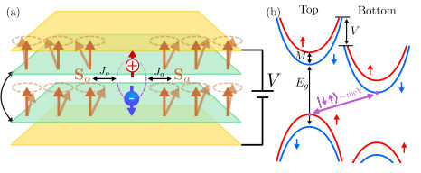
<figcaption class="paper-figure-caption"><b>Fig 1.</b> FIG. 1. (a) A ferromagnetic semiconducting bilayer with an applied voltage bias 𝑉such that the lowest-energy exciton is the interlayer spin-flip electron–hole state illustrated in (b), whose energy can be tuned to the meV scale. A finite interlayer (𝛾) and interband (𝜏) tunneling element 𝜏𝑥𝛾𝑥𝑡allows direct hybridization between excitons and acoustic and optical magnons.</figcaption>
</figure>
<figure class="paper-figure-card">
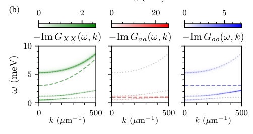
<figcaption class="paper-figure-caption"><b>Fig 2.</b> FIG. 2. (a) The k = 0 hybridization of the exciton (Δ𝑋) and the acoustic and optical magnons (with gaps Δ𝑎/𝑜) as the gate voltage 𝑉is increased. 𝑉𝑐is the critical voltage at which Δ𝑋= 0 in the absence of coupling to the magnon system. The gaps in the absence of coupling are shown by the dashed lines. The effective magnon– exciton couplings are 𝐽𝑎= −0.4 meV and 𝐽𝑜= −2.2 meV. (b) The exciton and magnon spectral density, −Im[𝐺𝛼𝛼(𝜔, 𝑘)], for 𝑉−𝑉𝑐= 3 meV (indicated by the vertical dashed line in (a)). The dotted lines show the energies obtained from the Hamiltonian approximation, and the bold dashed lines show the bare exciton and magnon energies.</figcaption>
</figure>
<figure class="paper-figure-card">
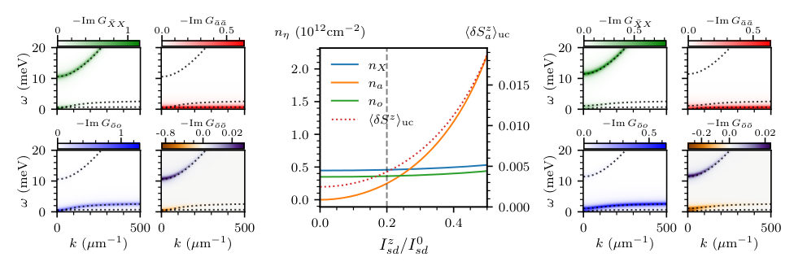
<figcaption class="paper-figure-caption"><b>Fig 3.</b> FIG. 3. (a) The spectral density, −Im[𝐺𝛼𝛽], in the condensed phase, with 𝐼𝑧 𝑠𝑑= 0, such that 𝐽𝑎= 0 and thus 𝑛𝑎is zero. The optical magnon couples to the Goldstone mode of the condensate, while the finite attractive coupling Γ0 induces a negative shift, Γ0𝑛𝑋= 0.4 meV, of both the optical and acoustic modes. Coupling to the exciton sector induces two-mode squeezing of the optical mode, such that −Im[𝐺¯𝑜¯𝑜] ≠0. (b) The exciton and magnon condensate densities 𝑛𝑋, 𝑛𝑎, 𝑛𝑜(left axis) as a function of 𝐼𝑧 𝑠𝑑, with 𝐼0 𝑠𝑑= 50 meV. The right axis shows the condensate-induced spin polarization per unit cell. (c) The spectral density with 𝐼𝑧 𝑠𝑑= 10 meV, such that both 𝐽𝑎,𝑜≠0 and thus the Goldstone mode...</figcaption>
</figure>
<figure class="paper-figure-card">
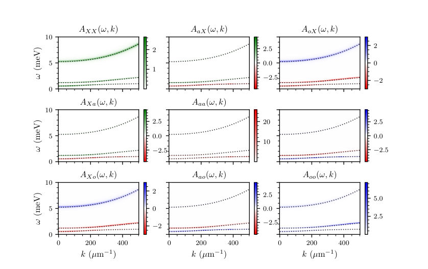
<figcaption class="paper-figure-caption"><b>Fig 4.</b> FIG. 1. Spectral function of the full frequency-dependent Green function. The dotted curves show the dispersions obtained from the on-shell Hamiltonian approximation. Here 𝑋, 𝑎, and 𝑜denote the exciton, acoustic-magnon, and optical-magnon components, respectively.</figcaption>
</figure>
</div>

<p><strong>Summary.</strong> This work theoretically investigates the resonant coupling between excitons and magnons in a biased ferromagnetic bilayer. By tuning the exciton energy, the system can achieve a bilinear coupling regime, leading to the formation of a magnon-exciton Bose-Einstein condensate. The study predicts observable spectral signatures of this hybridization.</p>
<p><strong>Why it may be interesting.</strong> The study of coupled bosonic systems (excitons and magnons) undergoing BEC formation and hybridization is highly relevant to understanding interacting quantum materials and collective excitations in condensed matter.</p>
<details>
<summary>Detailed structure</summary>
<p><strong>Main problem.</strong> To study the resonant coupling between excitons and magnons in a biased ferromagnetic electron-hole bilayer, moving beyond simple density-magnon coupling.</p>
<p><strong>Main result.</strong> The paper demonstrates bilinear magnon-exciton coupling, leading to hybridization of collective modes and the potential formation of a magnon-exciton Bose-Einstein condensate (BEC).</p>
<p><strong>Method.</strong> The analysis uses a microscopic derivation starting from exchange interactions, employing Green's functions and path integral formalism to derive coupled Gross-Pitaevskii equations.</p>
<p><strong>Model / system.</strong> The system is a biased ferromagnetic electron-hole bilayer, modeled by Hamiltonians including magnon, electron, and coupling terms. The coupling is tuned by a voltage bias to allow resonant interaction.</p>
<p><strong>Key observables.</strong> Spectral density (measured via Brillouin light scattering/magneto-Raman), condensate densities ($n_X, n_a, n_o$), and the hybridization gap.</p>
<p><strong>Important parameters / regimes.</strong> Voltage bias ($V$) tuning the exciton energy gap to the meV range; coupling strengths ($J_{\alphaeta}, \Gamma_0$).</p>
<p><strong>Assumptions / limitations.</strong> Approximations include the on-shell approximation and treating the system near homogeneous, time-independent condensate states to linearize fluctuations.</p>
<p><strong>Figures summary.</strong> Figures illustrate the avoided crossing of energy spectra as the bias voltage is varied, confirming hybridization, and show the spectral density confirming this coupling in the condensed phase.</p>
<p><strong>Paper structure.</strong> The paper progresses from defining the full Hamiltonian and deriving the coupled action, to solving the resulting coupled Gross-Pitaevskii equations, and finally analyzing the resulting excitation spectrum via Bogoliubov theory.</p>
</details>
<details>
<summary>Abstract</summary>
<p>Two-dimensional magnetic semiconductors provide a unique platform where strong magnon--exciton interactions can be realized. Owing to the intrinsic energy mismatch between excitons and magnons, however, these interactions are typically between the exciton density and magnons. We propose biased ferromagnetic electron--hole bilayers, where the exciton energy gap can be lowered with the voltage bias, as a platform in which excitons and magnons can instead couple resonantly. Starting from the microscopic exchange interactions between electrons and localized magnetic moments, we demonstrate the linear hybridization of magnons and spin-flip excitons in this regime. As the exciton energy is lowered further, a magnon--exciton Bose--Einstein condensate is formed. We show that this condensate is further modified by an attractive magnon--exciton density--density interaction, which we derive microscopically. We study the condensate's collective modes and demonstrate their hybridization with the magnons, providing an alternative detection mechanism for the formation of exciton condensates.</p>
</details>
<p><sub><a href="#top">↑ back to top</a></sub></p>

<p><a id="paper-2609.14577"></a></p>
<h3 id="phase-controlled-bipartite-and-tripartite-entanglement-and-bell-nonlocality-in-a-closed-loop-optomechanical-system"><a href="http://arxiv.org/abs/2609.14577v1">Phase-controlled bipartite and tripartite entanglement and Bell nonlocality in a closed-loop optomechanical system</a></h3>
<p><strong>Authors:</strong> Sha-Sha Zheng, Zi-Nan Wu, Di-Di Xu, Chang-Yu Li, Peng-Wei Gong, Qiongyi He, Feng-Xiao Sun<br>
<strong>Type:</strong> theory · <strong>Category:</strong> quantum information and computing · <strong>PDF:</strong> <a href="https://arxiv.org/pdf/2609.14577v1">https://arxiv.org/pdf/2609.14577v1</a><br>
<strong>Analysis basis:</strong> full PDF text, analyzed in chunks
<strong>Topic relevance:</strong> <code>analog quantum simulation</code> <strong>3/5</strong> · <code>correlated / nonlocal dissipation</code> <strong>2/5</strong> · <code>driven-dissipative phase transition</code> <strong>2/5</strong> · <code>methods for driven-dissipative</code> <strong>2/5</strong> · <code>quantum measurements</code> <strong>2/5</strong> · <code>Keldysh / 2PI / non-Gaussian methods</code> <strong>1/5</strong> · <code>Tavis-Cummings &amp; cavity-many-emitter</code> <strong>1/5</strong></p>
<div class="figure-strip-hint">↔ Scroll figures horizontally</div>
<div class="paper-figures-scroll">
<figure class="paper-figure-card">
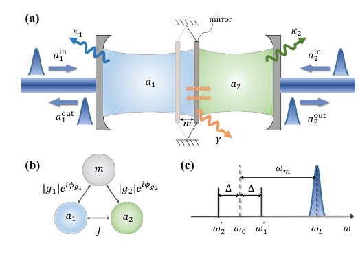
<figcaption class="paper-figure-caption"><b>Fig 1.</b> Figure 1. Schematic diagram of the closed-loop three-mode cavity optomechanical system. (a) The system consists of a partially transmitting dielectric membrane placed in the mid- dle of an optical cavity, which splits the cavity into two cou- pled modes described by annihilation operators a1 and a2 with frequencies ω1 and ω2, respectively, and a mechanical mode represented by m with frequency ωm. The two cavity modes are driven by a pulsed laser of duration time τ and are damped with rates κ1 and κ2. The mechanical mode is damped with rate γ. The input and output fields for the cavity modes are denoted by ain 1,2 and aout 1,2 , respectively. (b) The simpli- fied interaction diagram of the...</figcaption>
</figure>
<figure class="paper-figure-card">
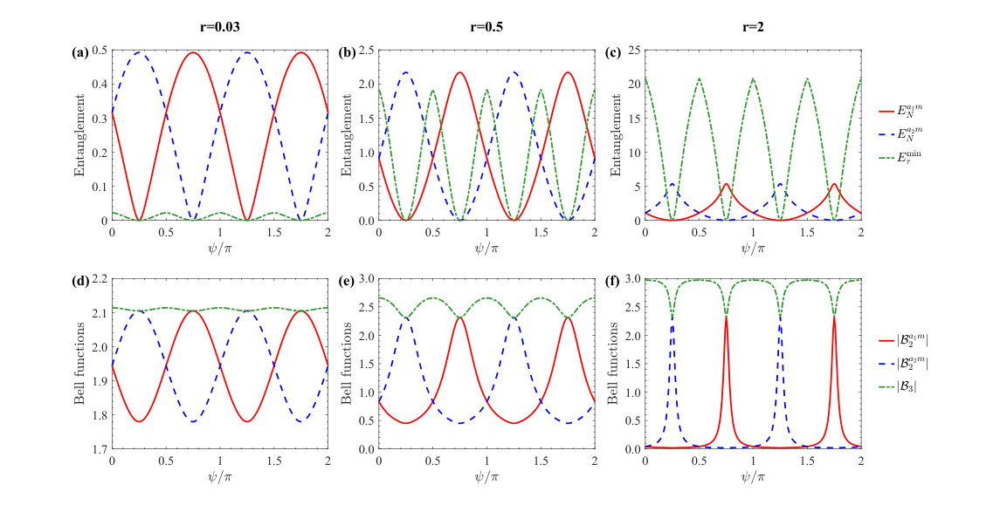
<figcaption class="paper-figure-caption"><b>Fig 2.</b> Figure 2. (a-c) Bipartite and genuine tripartite entanglement and (d-f) the corresponding Bell functions versus the relative phase ψ of the closed-loop three-mode optomechanical system. Specifically, E ajm N (j = 1, 2) represents the bipartite entanglement between the cavity mode aj and the mechanical mode m, while Emin τ quantifies the genuine tripartite entanlement among all three modes. Besides, B ajm 2 is the maximized bipartite Bell function of the aj −m subsystem under displaced partiy measurement through optimizing the quadratures  uj, u′ j (j = 1, 2) , and |B3| indicates the corresponding maximized tripartite Bell function of the tripartite system by optimizing the quadratures ...</figcaption>
</figure>
<figure class="paper-figure-card">
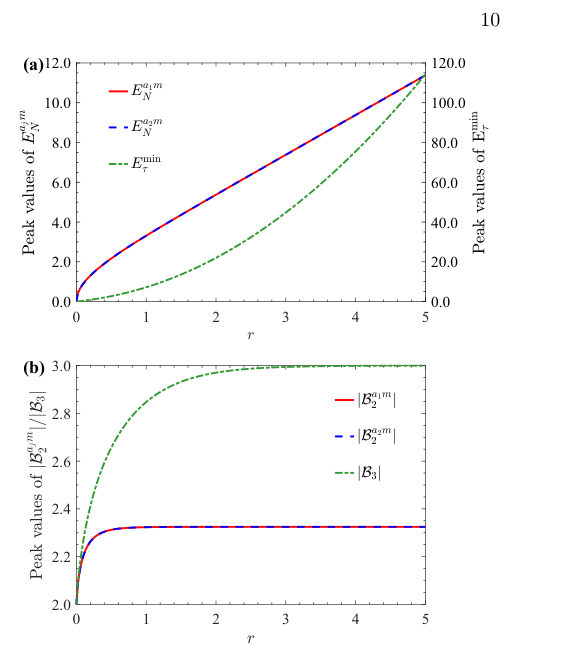
<figcaption class="paper-figure-caption"><b>Fig 3.</b> Figure 3. (a) Maximized bipartite/tripartite entanglement and (b) bipartite/tripartite Bell functions plotted against the effective squeezing parameter r. All quantities are op- timized to their maximal values by selecting the appropri- ate relative phase ψ. Specifically, the bipartite quantities Ea1m N and |Ba1m 2 | are maximized at phases ψ = (n + 3/4)π (n = 0, 1, 2, . . . ), while Ea2m N and |Ba2m 2 | achieve their op- timal values when ψ = (n + 1/4)π (n = 0, 1, 2, . . . ). The tripartite measures Emin τ and |B3| are optimized at ψ = nπ/2 (n = 0, 1, 2, . . . ). Unless otherwise stated, all other parame- ters remain the same as those in Fig. 2.</figcaption>
</figure>
<figure class="paper-figure-card">
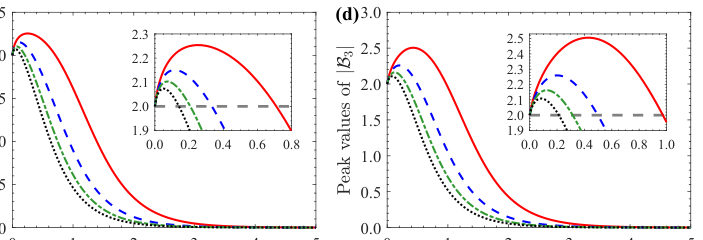
<figcaption class="paper-figure-caption"><b>Fig 4.</b> Figure 4. The peak values of (a) the bipartite entanglement Ea1m N and Ea2m N , (b) the genuine tripartite entanglement Emin τ , (c) the bipartite Bell functions |Ba1m 2 | and |Ba2m 2 |, and (d) the tripartite Bell function |B3| versus the squeezing parameter r with the relative phase ψ optimized. The mechanical dissipation rate is set to γ = 0.005g, and the thermal noise occupation numbers are varied as nm = 0, 1, 2, 3. The other parameters are the same as in Fig. 2.</figcaption>
</figure>
<figure class="paper-figure-card">
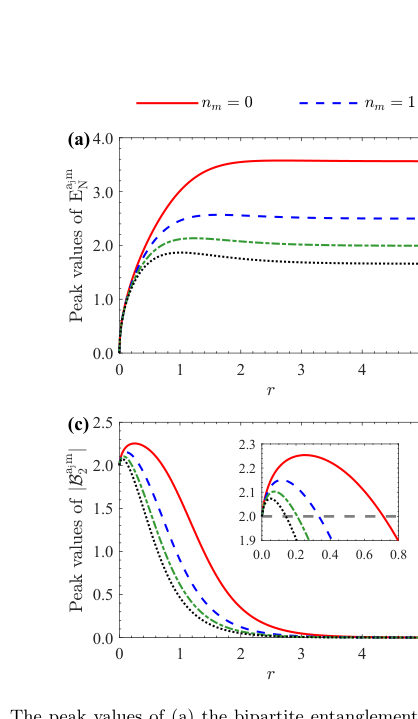
<figcaption class="paper-figure-caption"><b>Fig 5.</b> Figure 3 displays the maximal entanglement and Bell functions as functions of the squeezing parameter r, with the relative phase ψ optimized for each quantity. It is observed from Fig. 3(a) that the maximal bipartite and tripartite entanglement exhibits monotonic growth with- out saturation across the entire range of r considered. In contrast to the monotonic growth of the entangle- ment measures, the bipartite Bell functions |Ba1m 2 | and |Ba2m 2 | along with the tripartite Bell function |B3| exhibit an initial increase with r followed by saturation, as de- picted in Fig. 3(b). For sufficiently large r, the bipartite Bell functions saturate at approximately 2.32, which re- mains...</figcaption>
</figure>
</div>

<p><strong>Summary.</strong> This paper proposes a novel scheme to control entanglement and Bell nonlocality in a three-mode optomechanical system by tuning the relative phase between optical modes. The authors demonstrate maximal violations of Bell inequalities and reveal that tripartite nonlocality can exist independently of genuine tripartite entanglement. This establishes a framework for phase-tunable quantum networks and noise-resilient quantum tests.</p>
<p><strong>Why it may be interesting.</strong> This work provides a concrete, experimentally relevant platform (optomechanics) to study fundamental quantum information concepts like multipartite entanglement and Bell nonlocality, offering insights into noise resilience and correlation structure.</p>
<details>
<summary>Detailed structure</summary>
<p><strong>Main problem.</strong> The paper aims to generate and manipulate bipartite and tripartite entanglement and Bell nonlocality within a closed-loop optomechanical system, while also clarifying the relationship between these quantum correlations.</p>
<p><strong>Main result.</strong> The system allows for deterministic switching of bipartite entanglement and tunable genuine tripartite entanglement via phase control. Crucially, it demonstrates that tripartite Bell nonlocality can persist even when genuine tripartite entanglement is absent.</p>
<p><strong>Method.</strong> The analysis involves deriving quantum Langevin equations, constructing the covariance matrix for quadrature components, and using displaced-parity measurements to test Bell inequalities.</p>
<p><strong>Model / system.</strong> The physical platform is a closed-loop three-mode optomechanical system coupling two optical modes to one mechanical mode. The system dynamics are governed by a Hamiltonian incorporating coupling terms and dissipation.</p>
<p><strong>Key observables.</strong> Bipartite and genuine tripartite entanglement, bipartite and tripartite Bell nonlocality, and the relative phase ($\delta\varphi_0$) controlling correlations.</p>
<p><strong>Important parameters / regimes.</strong> Relative phase ($\delta\varphi_0$), mechanical dissipation, and thermal noise levels.</p>
<p><strong>Assumptions / limitations.</strong> The analysis utilizes the quantum Langevin approach, and later sections rely on the adiabatic approximation and assumptions about the thermal state of mechanical noise.</p>
<p><strong>Figures summary.</strong> Figure 1 schematically illustrates the closed-loop three-mode cavity optomechanical setup. Other figures compare the maximized tripartite Bell function against the bipartite subsystem's Bell function.</p>
<p><strong>Paper structure.</strong> The paper introduces the problem, details the Hamiltonian and derivation of quantum Langevin equations, discusses the methods for constructing the covariance matrix, simulates phase control and noise effects, and concludes with a summary of the findings.</p>
</details>
<details>
<summary>Abstract</summary>
<p>We propose a novel scheme to generate and manipulate bipartite and tripartite entanglement and Bell nonlocality in a closed-loop three-mode optomechanical system, where two optical modes are simultaneously coupled to a mechanical mode via typical optomechanical interactions and also coupled to each other through field transmission. This configuration gives rise to a phase-sensitive coupling, in which the relative phase directly controls the population distribution between two optical modes, enabling coherent redistribution of quantum correlations. By tuning this relative phase, we achieve deterministic switching of bipartite entanglement between two optical-mechanical pairs, as well as tunable genuine tripartite entanglement among three modes. Employing the displaced-parity measurement, we construct both the bipartite and tripartite Bell inequalities in phase space and observe maximal violations of approximately $2.32$ and $3$, respectively, which coincide exactly with the values achievable for ideal bipartite and tripartite Einstein-Podolsky-Rosen states. Counterintuitively, we find that the tripartite Bell nonlocality can persist even when the genuine tripartite entanglement is absent, providing deeper insight into the relationship between these two types of quantum correlations. Furthermore, we systematically analyze the effects of mechanical dissipation and thermal noise, identifying the parameter regions where Bell violation survives under realistic experimental conditions. Our results establish a comprehensive framework for generating, controlling, and verifying multipartite quantum correlations, paving the way towards phase-tunable quantum networks and noise-resilient tests of quantum foundations.</p>
</details>
<p><sub><a href="#top">↑ back to top</a></sub></p>

<p><a id="paper-2609.14838"></a></p>
<h3 id="quantum-hall-ferromagnetism-in-a-cavity-vacuum"><a href="http://arxiv.org/abs/2609.14838v1">Quantum Hall Ferromagnetism in a Cavity Vacuum</a></h3>
<p><strong>Authors:</strong> Ceren B. Dag, Luis Brey, Ganpathy Murthy, H. A. Fertig<br>
<strong>Type:</strong> theory · <strong>Category:</strong> strongly correlated electrons · <strong>PDF:</strong> <a href="https://arxiv.org/pdf/2609.14838v1">https://arxiv.org/pdf/2609.14838v1</a><br>
<strong>Analysis basis:</strong> full PDF text, analyzed in chunks
<strong>Topic relevance:</strong> <code>driven-dissipative phase transition</code> <strong>3/5</strong> · <code>analog quantum simulation</code> <strong>2/5</strong> · <code>methods for driven-dissipative</code> <strong>2/5</strong> · <code>non-equilibrium universality</code> <strong>2/5</strong> · <code>Keldysh / 2PI / non-Gaussian methods</code> <strong>1/5</strong> · <code>Tavis-Cummings &amp; cavity-many-emitter</code> <strong>1/5</strong> · <code>correlated / nonlocal dissipation</code> <strong>1/5</strong> · <code>quantum measurements</code> <strong>1/5</strong></p>
<div class="figure-strip-hint">↔ Scroll figures horizontally</div>
<div class="paper-figures-scroll">
<figure class="paper-figure-card">
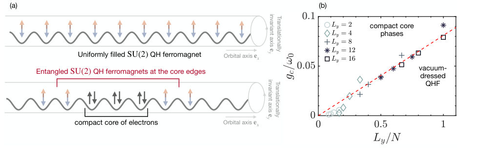
<figcaption class="paper-figure-caption"><b>Fig 1.</b> Figure 1. (a) The schematics on the ground state phases of 2DEG on a cylinder embedded in a cavity with linear field profile. For smaller light-matter coupling than a critical coupling gc, the matter is a vacuum-dressed Quantum Hall Ferromagnet (QHF), which is a uniform state with SU(2) symmetry. For larger light-matter couplings, a new phase of matter emerges with non-uniform states featuring a compact core of electrons occupying the core of 2DEG with entangled uniform QHF states at the core edges. (b) The phase diagram computed with density-matrix renormalization group with all data collapsing on a line in the plane of critical coupling normalized by cavity frequency gc/ω0 and system size...</figcaption>
</figure>
<figure class="paper-figure-card">
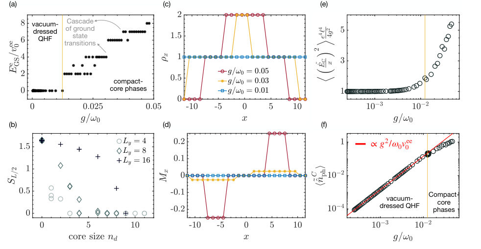
<figcaption class="paper-figure-caption"><b>Fig 2.</b> Figure 2. (a) Electronic interaction energy Ee GS = ⟨Ψgs| ¯Hee int|Ψgs⟩with respect to light-matter coupling strength normalized by cavity frequency g/ω0. (b) Half-chain von Neumann entanglement entropy with respect to compact-core size nd for different cylinder circumferences at N = 24. The core size nd = 0 corresponds to the vacuum-dressed QHF. As Ly increases, more compact-core states with nonzero entanglement entropy occur. (c) Electronic density and (d) magnetization with respect to orbital position for different g/ω0, showing the vacuum-dressed QHF (uniform-density and magnetization) and two compact- core phases (non-uniform density and magnetization with a compact core). Subfigures...</figcaption>
</figure>
<figure class="paper-figure-card">
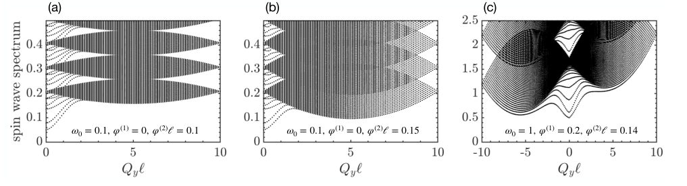
<figcaption class="paper-figure-caption"><b>Fig 3.</b> Figure 3. Spin wave spectra HSF −Eee 0 −ℏω0v(0) φ (Eq. (35)) for a linearly varying cavity field. Calculations carried out for N = 101 electrons and 2DEG dimensions Lx = 10.1eℓ, Ly = 20πℓ. Highest photon occupation number retained was 20 and ζ = 1. Coupling strength between 2DEG and cavity photon field was varied using parameters ω0, φ(1) and φ(2)ℓas labeled. In (a) and (b), electron-electron interaction is assumed to be a delta function contact potential, with scale vee 0 . Results are in these cases symmetric when Qy →−Qy. In (c), electron-electron interaction is taken to be Coulomb, with scale e2/ℓ. For stronger couplings φ(2)ℓ, the spectra indicate an instability.</figcaption>
</figure>
<figure class="paper-figure-card">
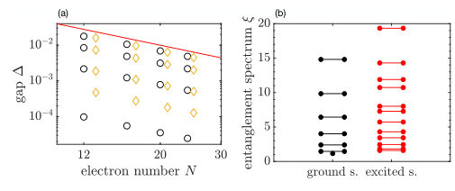
<figcaption class="paper-figure-caption"><b>Fig 4.</b> Figure 4. (a) Many-body gap of vacuum-dressed QHF de- creases with electron number N and increases with cylin- der circumference Ly in a power-law fashion ∝L2 yN −2 as found by both density matrix renormalization group (DMRG) (black-circles) and spin wave analysis (orange-diamond) with the same parameter set. The blue-solid line is ∝N −2, and Ly = 2, 4, 8, 12 in an ascending order. The gaps match per- fectly for all Ly ≫ℓ. The gap is in the unit of vee 0 /2π. (b) The entanglement spectrum ξ = −log λi for the QHF ground state (black-dots) and the first excited state (red-dots) at N = 24, Ly = 16 after a cut in the middle of the cylin- der. The degenerate pairs are marked with a solid line.</figcaption>
</figure>
<figure class="paper-figure-card">
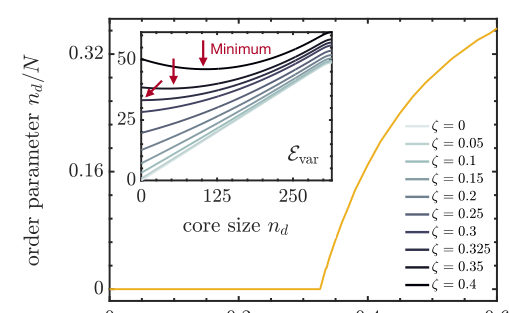
<figcaption class="paper-figure-caption"><b>Fig 5.</b> Figure 5. The order parameter, which is the number of doubly occupied orbitals normalized by the total number of elctrons, nd/N, with respect to the dimensionless light-matter coupling ζ. The core size is found by minimizing εvar. Beyond ζc ≈ 0.326, the optimal nd increases monotonically with ζ. Inset: εvar, Eq. (46), as a function of the compact core size nd for various values of the dimensionless light-matter coupling ζ (in legend). The parameters are ∆X = 2πℓ2</figcaption>
</figure>
</div>

<p><strong>Summary.</strong> This theoretical study analyzes a Quantum Hall Ferromagnet coupled to a cavity vacuum, predicting a continuous phase transition at $
u=1$. Above a critical coupling, the uniform ferromagnetic state breaks into an inhomogeneous 'compact-core' phase. The transition is characterized by the emergence of a core region and is predicted to be experimentally detectable by monitoring the cavity photon number.</p>
<p><strong>Why it may be interesting.</strong> This work provides a rare example of a quantum phase transition in strongly correlated electron systems (QHF) whose instability is stabilized and driven by coupling to an external quantum field (cavity vacuum fluctuations).</p>
<details>
<summary>Detailed structure</summary>
<p><strong>Main problem.</strong> The paper investigates a continuous phase transition in a Quantum Hall Ferromagnet (QHF) driven by coupling to vacuum fluctuations from an external cavity.</p>
<p><strong>Main result.</strong> Above a critical coupling, the uniform QHF state becomes unstable, transitioning into inhomogeneous 'compact-core phases' characterized by separated uniform fluid 'flanks'.</p>
<p><strong>Method.</strong> The analysis employs a combination of analytic spin wave calculations, mean-field theory, and advanced numerical simulations like DMRG.</p>
<p><strong>Model / system.</strong> The system is a 2DEG in a strong magnetic field ($
u=1$) modeled as a QHF, coupled to a single cavity vacuum mode. The Hamiltonian includes electron-electron interactions and the cavity coupling term.</p>
<p><strong>Key observables.</strong> The order parameter is the size of the 'compact core'; the physical photon number is proposed as an experimental signature for the transition.</p>
<p><strong>Important parameters / regimes.</strong> Key parameters include the filling factor ($
u=1$), the light-matter coupling strength ($g_c$), and the geometry (e.g., thin-cylinder limit).</p>
<p><strong>Assumptions / limitations.</strong> The analysis relies on the Lowest Landau Level (LLL) projection and assumes the use of a dipole gauge for the cavity field.</p>
<p><strong>Figures summary.</strong> Figures schematically illustrate the ground state phases (uniform vs. compact core) and show the phase diagram computed via DMRG, mapping the transition boundary.</p>
<p><strong>Paper structure.</strong> The paper progresses by establishing the model in the LLL, analyzing the stability of the uniform state using spin wave theory and MFT, and confirming the transition boundary and the nature of the new phases using DMRG and entanglement spectrum analysis.</p>
</details>
<details>
<summary>Abstract</summary>
<p>We uncover a continuous phase transition in a quantum Hall ferromagnet (QHF) at filling factor $ν=1$, driven by vacuum fluctuations of a cavity. Our analysis starts with a Landau level projection in dipole gauge, where we find the states to be well-represented by a tensor product of the electronic and photonic degrees of freedom. Through analytic spin wave calculations, mean-field theory and density matrix renormalization group (DMRG) simulations, we show that for a spatially antisymmetric cavity field, the uniform QHF state is stable only for weak light-matter coupling and gives way to states of inhomogeneous electron density above a critical coupling. These states involve "flanks" of uniform QHF fluids, separated by a "compact core" of doubly occupied orbitals with the core size being the order parameter, which we dub as "compact-core phases". While the fully spin polarized electronic states are product states, entanglement builds up between the uniform QHF flanks across the compact core in the $S_z=0$ magnetic sector, motivating an ansatz for the compact-core electronic states. The transition boundary is exactly derived for product electronic states in terms of matter and cavity parameters, and numerically confirmed by DMRG. We also study the thin-cylinder limit near the critical point where quantum fluctuations are enhanced, and the many-body excited states in both phases by focusing on the entanglement spectrum degeneracies. Remarkably, the photon number is found to probe the order parameter of the transition, providing a possible experimental signature of the electronic transition and the compact-core states. Our study offers a rare example of a phase of electrons stabilized solely by coupling to the enhanced vacuum fluctuations of a cavity mode.</p>
</details>
<p><sub><a href="#top">↑ back to top</a></sub></p>

<p><a id="paper-2609.15380"></a></p>
<h3 id="active-pistons-extract-work-by-periodic-compression-alone"><a href="http://arxiv.org/abs/2609.15380v1">Active pistons extract work by periodic compression alone</a></h3>
<p><strong>Authors:</strong> Paul Bernard, Euijoon Kwon, Benjamin Buhl, Étienne Fodor, Olivier Dauchot<br>
<strong>Type:</strong> both · <strong>Category:</strong> statistical mechanics · <strong>PDF:</strong> <a href="https://arxiv.org/pdf/2609.15380v1">https://arxiv.org/pdf/2609.15380v1</a><br>
<strong>Analysis basis:</strong> full PDF text, analyzed in chunks
<strong>Topic relevance:</strong> <code>driven-dissipative phase transition</code> <strong>3/5</strong> · <code>non-equilibrium universality</code> <strong>3/5</strong> · <code>Keldysh / 2PI / non-Gaussian methods</code> <strong>2/5</strong> · <code>methods for driven-dissipative</code> <strong>2/5</strong> · <code>Frenkel-Kontorova</code> <strong>1/5</strong></p>
<div class="figure-strip-hint">↔ Scroll figures horizontally</div>
<div class="paper-figures-scroll">
<figure class="paper-figure-card">
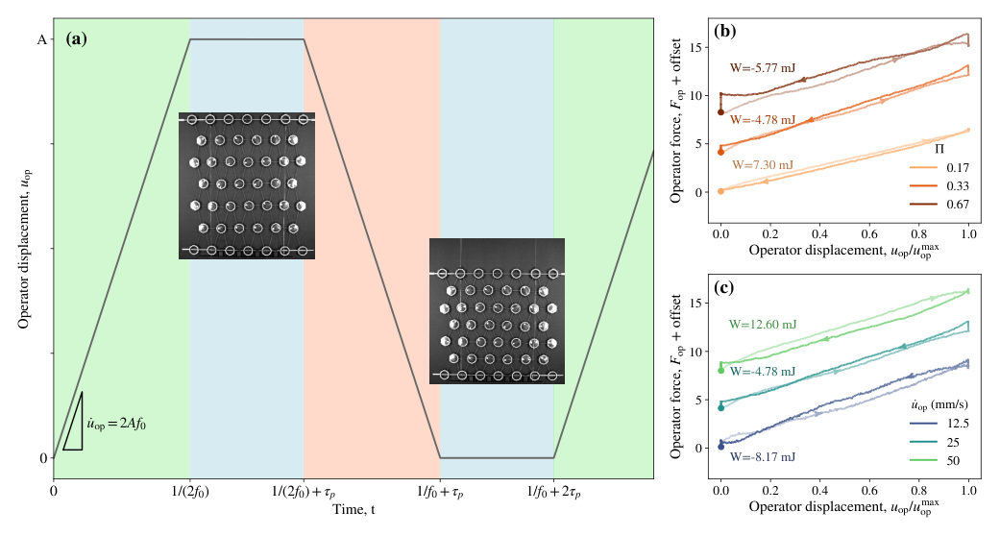
<figcaption class="paper-figure-caption"><b>Fig 1.</b> FIG. 1. Experimental realization of active pistons. (a) Periodic compression and expansion of an elastic network connecting hexbugs. The bottom layer is pinned, and the top layer is displaced by the operator. The forcing profile is composed of expansions and compressions at constant speed interceded with rest periods. (b,c) For periodic expansion and compression, mechanical cycles emerge in the space of the dimensionless operator force Fop and operator displacement uop. Clockwise and counter-clockwise cycles supply work to (W &gt; 0) and extract work from (W &lt; 0) pistons, respectively. Parameters in Ref. [35].</figcaption>
</figure>
<figure class="paper-figure-card">
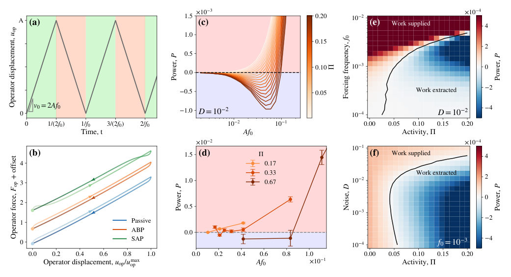
<figcaption class="paper-figure-caption"><b>Fig 2.</b> FIG. 2. Theoretical model of two-dimensional active pistons. (a) Periodic compression and expansion of an elastic network composed of motile self-aligning particles. (b) For similar parameter values, a counter-clockwise mechanical cycle (W &lt; 0) for self-aligning particles [green, SAP] becomes clockwise (W &gt; 0) for motile particles without self-alignment [orange, ABP], and for passive particles without motility [blue, Passive]. (c) The operator power P is negative at low frequency f0 for high activity Π, in line with experimental results shown in panel (d). (e,f) The phase diagram distinguishes regimes where work is either supplied to (P &gt; 0) or extracted from (P &lt; 0) active pistons. The...</figcaption>
</figure>
<figure class="paper-figure-card">
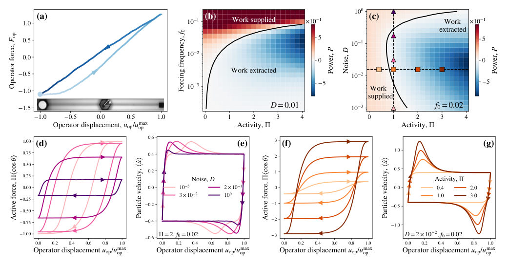
<figcaption class="paper-figure-caption"><b>Fig 3.</b> FIG. 3. One-dimensional active pistons with a single hexbug. (a) Experiments reveal a counter-clockwise mechanical cycle showing work extraction W &lt; 0. (b,c) Phase diagrams in theoretical models reproduce the same qualitatively features as in two-dimensional active pistons with many hexbugs [Figs. S6(e,f)], including a re-entrant transition with the noise amplitude D. Markers refer to mechanical cycles in panels (d-g). The active force Π⟨cos θ⟩and the particle velocity ⟨˙u⟩always feature clockwise cycles as functions of the operator displacement uop, whose complex dependence on noise amplitude D and activity Π helps rationalize the re-entrant transition in the phase diagram. Parameter...</figcaption>
</figure>
<figure class="paper-figure-card">
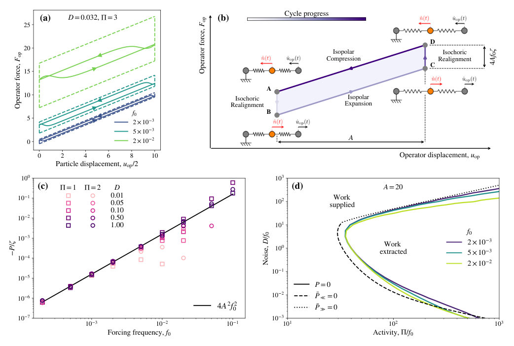
<figcaption class="paper-figure-caption"><b>Fig 4.</b> FIG. 4. Insights from linear response theory. (a) Mechanical cycles in numerical simulations (solid lines) converge at low frequency f0 to the parallelogram predicted by linear response (dashed lines). (b) During compression and expansion (B→C and D→A), the self-propulsion orientation ˆn points along the displacement direction ˆuop: it yields affine relations between the operator force Fop and displacement uop. When switching between compression and expansion (A→B and C→D), ˆn relaxes (almost) immediately towards ˆuop at constant displacement. The cycle area is determined by the amplitudes of displacement A and of realignment Af0ζ, where ζ is the linear response coefficient. (c) The...</figcaption>
</figure>
<figure class="paper-figure-card">
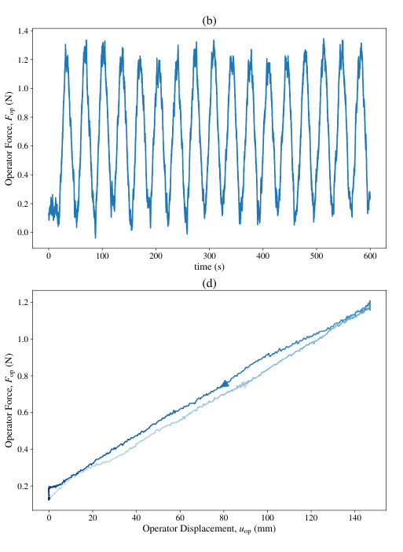
<figcaption class="paper-figure-caption"><b>Fig 5.</b> Fig. 2(c), 2(e) [0, 0.02] 0.1 0.01 2.0 [10−4, 10−2] Fig. 2(f) 1.5 × 10−2 0.1 [10−4, 10−1] 2.0 10−3</figcaption>
</figure>
</div>

<p><strong>Summary.</strong> This paper demonstrates that active matter systems, modeled as active pistons, can extract mechanical work using only periodic compression. The work extraction capability hinges on the self-alignment of the active components coupling to the external force. The authors map out the parameter space governing this effect, revealing complex phase transitions like re-entrance.</p>
<p><strong>Why it may be interesting.</strong> The work extraction mechanism provides a concrete, non-equilibrium engine design principle rooted in active matter physics, which has parallels in understanding energy transduction in complex, driven systems far from equilibrium.</p>
<details>
<summary>Detailed structure</summary>
<p><strong>Main problem.</strong> The study investigates how active matter can extract mechanical work solely through periodic compression, thereby bypassing constraints imposed by equilibrium thermodynamics.</p>
<p><strong>Main result.</strong> Work extraction is possible via active pistons, provided the internal activity (self-alignment) couples effectively with the external mechanical perturbation. The work extraction phase diagram exhibits a re-entrant transition dependent on noise amplitude.</p>
<p><strong>Method.</strong> The authors employ a combination of linear response theory, large/small noise approximations, and analysis of cycle areas in phase space to derive analytical predictions for the extracted power.</p>
<p><strong>Model / system.</strong> The system is modeled using active pistons, realized physically with elastic networks of self-aligning motile particles (like hexbugs). The dynamics are governed by coupled equations for particle displacement and orientation.</p>
<p><strong>Key observables.</strong> Extracted work ($W$) and power ($P$), the material response coefficient ($\zeta$), and the phase boundary separating work-extracting and non-extracting regimes.</p>
<p><strong>Important parameters / regimes.</strong> Activity parameter ($\Pi$), noise amplitude ($D$), and the frequency of external compression ($f_0$).</p>
<p><strong>Assumptions / limitations.</strong> The analysis heavily relies on the assumption of slow (quasistatic) protocols for linear response derivations, and approximations are used for both high and low noise limits.</p>
<p><strong>Figures summary.</strong> Figures illustrate the mechanical cycles (force vs. displacement) showing the work extraction cycle direction, and phase diagrams mapping the work extraction regime dependence on noise and activity.</p>
<p><strong>Paper structure.</strong> The paper progresses by establishing the physical model, deriving the work calculation from the dynamics, and then analyzing the resulting power output using different theoretical limits (linear response, large noise, small noise) to map the full parameter space.</p>
</details>
<details>
<summary>Abstract</summary>
<p>Active matter is liable to invent protocols that evade the constraints of equilibrium thermodynamics. We put forward active pistons that extract work by periodic compression alone without changing any bulk property of the system. Such pistons necessarily couple the perturbation imposed by an external operator with some degrees of freedom internal to active components. We illustrate this design principle with elastic networks composed of self-aligning motile particles. For slow protocols, self-alignment always overwhelms mechanical friction when the internal activity exceeds a specific threshold controlled by fluctuations. We identify the key response coefficient that helps delineate regimes of work extraction, and reveal that the corresponding phase diagram follows a master curve with re-entrance in terms of noise amplitude. Overall, our active pistons embody a novel design principle with broad implications for building innovative engines far from equilibrium.</p>
</details>
<p><sub><a href="#top">↑ back to top</a></sub></p>

<p><a id="paper-2609.13953"></a></p>
<h3 id="digital-quantum-lattice-boltzmann-evolution-by-reversible-compute-and-open-system-reset"><a href="http://arxiv.org/abs/2609.13953v1">Digital quantum lattice Boltzmann evolution by reversible compute and open-system reset</a></h3>
<p><strong>Authors:</strong> Muhammad Idrees Khan<br>
<strong>Type:</strong> both · <strong>Category:</strong> numerical methods · <strong>PDF:</strong> <a href="https://arxiv.org/pdf/2609.13953v1">https://arxiv.org/pdf/2609.13953v1</a><br>
<strong>Analysis basis:</strong> full PDF text, analyzed in chunks
<strong>Topic relevance:</strong> <code>driven-dissipative phase transition</code> <strong>3/5</strong> · <code>methods for driven-dissipative</code> <strong>3/5</strong> · <code>non-equilibrium universality</code> <strong>2/5</strong> · <code>Keldysh / 2PI / non-Gaussian methods</code> <strong>1/5</strong> · <code>correlated / nonlocal dissipation</code> <strong>1/5</strong> · <code>quantum measurements</code> <strong>1/5</strong></p>
<div class="figure-strip-hint">↔ Scroll figures horizontally</div>
<div class="paper-figures-scroll">
<figure class="paper-figure-card">
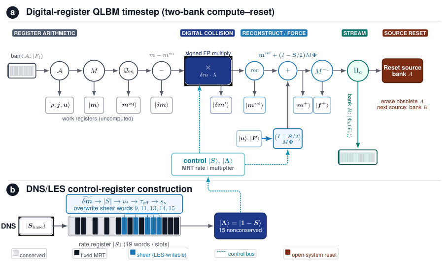
<figcaption class="paper-figure-caption"><b>Fig 1.</b> FIG. 1. Digital-register forced D3Q19 QLBM timestep and DNS/LES control registers. (a) Register pipeline from source bank 𝐴= |𝐹𝑡⟩to destination bank 𝐵= |𝐹𝑡+1⟩. The stages are macroscopic recovery, moment transform, equilibrium arithmetic, nonequilibrium moments, signed fixed-point collision 𝛿𝑚↦→𝜆⊙𝛿𝑚, reconstruction and body forcing Δ𝑡(𝐼−S/2)𝑀𝚽, inverse transform, streaming into bank 𝐵, then Reset(𝐴). Bank 𝐵supplies the source state for the next timestep (cf. Table III and Algorithm 1). Dashed cyan lines carry the MRT rate and multiplier registers |S⟩and |𝚲⟩. (b) DNS loads fixed |Sbase⟩. LES overwrites shear words 9, 11, 13, 14, 15 from local strain. Fifteen nonconserved multipliers |𝚲⟩= |1...</figcaption>
</figure>
<figure class="paper-figure-card">
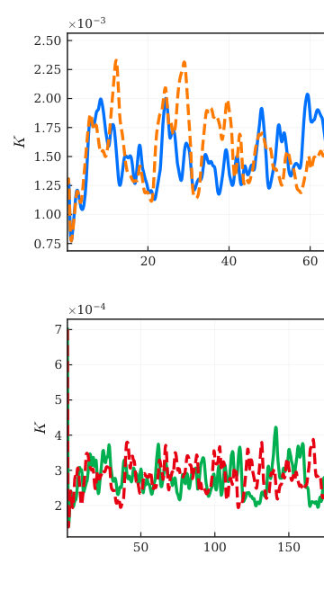
<figcaption class="paper-figure-caption"><b>Fig 2.</b> FIG. 2. Volume-averaged turbulent kinetic energy 𝐾. (a) DNS. (b) LES.</figcaption>
</figure>
<figure class="paper-figure-card">
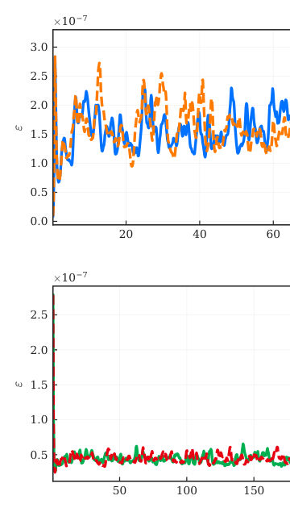
<figcaption class="paper-figure-caption"><b>Fig 3.</b> FIG. 3. Spectral dissipation 𝜀mol. (a) DNS. (b) LES (molecular 𝜈0 only, with 𝜀SGS entering Fig. 4).</figcaption>
</figure>
<figure class="paper-figure-card">
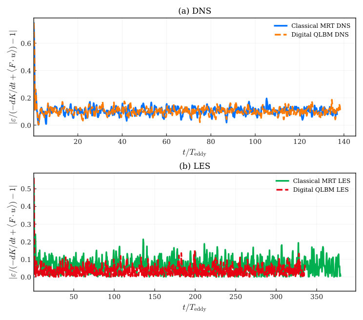
<figcaption class="paper-figure-caption"><b>Fig 4.</b> FIG. 4. Energy-budget residual 𝑅𝜀= |𝜀tot/(−𝑑𝐾/𝑑𝑡+ 𝑃𝐹) −1|, with 𝑃𝐹= ⟨(F /𝜌) · u⟩. Strain-based 𝜀𝜈= 2𝜈0⟨𝑆𝛼𝛽𝑆𝛼𝛽⟩differs from the spectral 𝜀mol of Fig. 3. (a) DNS (𝜀tot = 𝜀𝜈). (b) LES (𝜀tot = 𝜀𝜈+ 𝜀SGS).</figcaption>
</figure>
<figure class="paper-figure-card">

<figcaption class="paper-figure-caption"><b>Fig 5.</b> FIG. 5. Mass conservation. Left, signed density deviation ⟨𝜌⟩−1. Right, relative mass drift |𝑚(𝑡)/𝑚(0) −1| (log scale). Classical float64 mass drift remains ∼10−10. Digital QLBM at production width 𝑏= 24 reaches 6.72 × 10−4</figcaption>
</figure>
</div>

<p><strong>Summary.</strong> This paper introduces a Digital Quantum Lattice Boltzmann (QLBM) algorithm to simulate turbulent fluid flow using quantum computation principles. It overcomes the challenge of modeling nonlinear dissipation by employing a reversible 'compute-reset' quantum channel. The method is rigorously tested against classical DNS/LES simulations, demonstrating quantitative agreement in key physical observables.</p>
<p><strong>Why it may be interesting.</strong> While the primary focus is on numerical simulation techniques for fluid dynamics, the development of a reversible, CPTP quantum channel to model a dissipative, nonlinear process is highly relevant to open quantum systems theory and quantum computation.</p>
<details>
<summary>Detailed structure</summary>
<p><strong>Main problem.</strong> The paper addresses the challenge of simulating nonlinear and dissipative fluid dynamics, like turbulence, using quantum computation models that are inherently linear and reversible.</p>
<p><strong>Main result.</strong> They successfully propose and validate a digital quantum lattice Boltzmann (QLBM) algorithm using a compute-reset mechanism that achieves statistical agreement with classical simulations across various turbulence metrics.</p>
<p><strong>Method.</strong> The core method is a digital quantum simulation of the Lattice Boltzmann Method (LBM) time evolution, implemented as a reversible, Completely Positive and Trace Preserving (CPTP) quantum channel.</p>
<p><strong>Model / system.</strong> The physical system is fluid dynamics, modeled by the LBM, applied to forced homogeneous isotropic turbulence (HIT) in 2D (D2Q9) and 3D (D3Q19) lattices. The simulation compares Direct Numerical Simulation (DNS) and Large Eddy Simulation (LES) regimes.</p>
<p><strong>Key observables.</strong> Mass, energy budgets, spectra, intermittency, and population differences ($\|f_{QLBM}^i - f_{cl}^i\|^2 / \|f_{cl}^i\|^2$).</p>
<p><strong>Important parameters / regimes.</strong> Reynolds number (15000), lattice structure (D2Q9, D3Q19), and fixed-point bit width ($b$).</p>
<p><strong>Assumptions / limitations.</strong> The method relies on two-bank storage and serial lattice depth, limiting near-term feasibility; the reset operation models dissipation into the environment.</p>
<p><strong>Figures summary.</strong> Figures compare Pope-normalized spectra and extended self-similarity between classical and digital QLBM simulations, while tables quantify error bounds across different bit widths and confirm bit-exactness in gate-level D2Q9 validation.</p>
<p><strong>Paper structure.</strong> The paper first identifies the theoretical mismatch between LBM and quantum reversibility, proposes the compute-reset QLBM contract, and then validates this contract by applying it to complex, realistic turbulence simulations (DNS/LES) across multiple dimensions and lattice types.</p>
</details>
<details>
<summary>Abstract</summary>
<p>Turbulent fluid simulation is computationally demanding because nonlinear interactions couple a wide range of scales. Quantum computing offers another computational model, but fluid evolution is nonlinear and dissipative whereas closed gate-based dynamics is linear and reversible. The lattice Boltzmann method (LBM) is an attractive discrete target because streaming is a local permutation, yet conventional collision reconstructs a nonlinear equilibrium and applies dissipative relaxation. We present a digital quantum lattice Boltzmann (QLBM) algorithm that keeps that nonlinear timestep in computational-basis registers. Each step writes the updated populations into a clean destination bank, uncomputes the workspace, and resets the obsolete source. The resulting channel is completely positive and trace preserving (CPTP), composes without intermediate measurement, and applies to any lattice Boltzmann stencil that can be evaluated reversibly into a clean bank. Forced D3Q19 homogeneous isotropic turbulence, in direct numerical simulation (DNS) and Smagorinsky large-eddy simulation (LES) at Reynolds number 15000 over one million lattice steps, shows statistical agreement in mass, energy budgets, spectra, and intermittency. The three-dimensional calculations use a digital-register emulator of the circuit. A separate D2Q9 implementation compiles the same contract to reversible gates and agrees bit-exactly with its integer twin. Two-bank storage and serial lattice depth limit near-term feasibility.</p>
</details>
<p><sub><a href="#top">↑ back to top</a></sub></p>

<p><a id="paper-2609.14563"></a></p>
<h3 id="exact-math353math-mean-rung-population-and-math354math-continuum-revival-time-ratio-in-the-anti-jaynes-cummings-vertex-at-math355math"><a href="http://arxiv.org/abs/2609.14563v1">Exact $1/4$ mean-rung population and $\sqrt{2}$ continuum revival-time ratio in the anti-Jaynes--Cummings vertex at $f_\star=\sqrt{\bar n+1}$</a></h3>
<p><strong>Authors:</strong> Onyango Stephen Okeyo<br>
<strong>Type:</strong> theory · <strong>Category:</strong> other · <strong>PDF:</strong> <a href="https://arxiv.org/pdf/2609.14563v1">https://arxiv.org/pdf/2609.14563v1</a><br>
<strong>Analysis basis:</strong> full PDF text, analyzed in chunks
<strong>Topic relevance:</strong> <code>Tavis-Cummings &amp; cavity-many-emitter</code> <strong>3/5</strong> · <code>analog quantum simulation</code> <strong>3/5</strong> · <code>quantum measurements</code> <strong>2/5</strong> · <code>Keldysh / 2PI / non-Gaussian methods</code> <strong>1/5</strong> · <code>driven-dissipative phase transition</code> <strong>1/5</strong> · <code>methods for driven-dissipative</code> <strong>1/5</strong></p>
<div class="figure-strip-hint">↔ Scroll figures horizontally</div>
<div class="paper-figures-scroll">
<figure class="paper-figure-card">

<figcaption class="paper-figure-caption"><b>Fig 1.</b> FIG. 3. Contrast observables versus f at ¯n = 16. Solid: P JC e −P AJC e from Eq. (16), hitting 1/4 at f⋆. Dashed: |P AJC e − P AJC g |, vanishing at f⋆. Both crossings are exact at finite ¯n.</figcaption>
</figure>
<figure class="paper-figure-card">

<figcaption class="paper-figure-caption"><b>Fig 2.</b> FIG. 1. Collapsed mean-rung excited population Eq. (14) versus f at ¯n = 16, χ = 0, ξ = 0. AJC (solid) drops through 1/4 at f⋆= √</figcaption>
</figure>
<figure class="paper-figure-card">

<figcaption class="paper-figure-caption"><b>Fig 3.</b> FIG. 2. Population dynamics at the working point f⋆= √¯n + 1, ¯n = 16, χ = 0, ξ = 0. Left: AJC, starting from |g, α⟩; Pe (solid) and Pg (dashed) relax to 1/4 and 3/4. Right: JC, starting from |e, α⟩; both relax to 1/2. The two traces start from the natural ground state of each block; the JC mean- rung value 1/2 is independent of the initial computational state, so the vertex contrast C is well defined. Horizontal ref- erence lines at 1/4, 1/2, and 3/4.</figcaption>
</figure>
<figure class="paper-figure-card">

<figcaption class="paper-figure-caption"><b>Fig 4.</b> FIG. 4. Working frequency f⋆= √¯n + 1 versus ¯n. Markers: the six scan values used in the paper. The working point moves to larger f as ¯n grows, so the reference-normalized observable is tunable by coherent amplitude.</figcaption>
</figure>
<figure class="paper-figure-card">

<figcaption class="paper-figure-caption"><b>Fig 5.</b> FIG. 5. Continuum revival clocks at χ = 0, ξ = 0, ¯n = 16. Horizontal line: tJC R , independent of f. Rising curve: tAJC R . Right axis: ratio Eq. (12). Dense scan in f from 0.02 to 12.</figcaption>
</figure>
</div>

<p><strong>Summary.</strong> This paper analyzes the anti-Jaynes-Cummings (AJC) coupling vertex, showing that its mean-rung excited population reaches an exact value of $1/4$ at a specific frequency $f_\star$. The authors establish this as a robust diagnostic tool by comparing it to the JC vertex and mapping the required conditions onto experimental setups like trapped ions and circuit QED. It provides a deep theoretical understanding of quantum coupling dynamics in these systems.</p>
<p><strong>Why it may be interesting.</strong> This work provides a highly quantitative theoretical framework for using subtle differences between two related quantum coupling regimes (JC vs. AJC) to perform precise measurements in cavity QED, linking fundamental theory to specific experimental platforms.</p>
<details>
<summary>Detailed structure</summary>
<p><strong>Main problem.</strong> The paper investigates the differences between the Jaynes-Cummings (JC) and anti-Jaynes-Cummings (AJC) coupling vertices in a cavity QED setting, using the AJC vertex as a differential measurement tool.</p>
<p><strong>Main result.</strong> The mean-rung excited population in the AJC vertex reaches an exact value of $1/4$ at a specific frequency $f_\star=\sqrt{ar{n}+1}$, and the continuum revival-time ratio $r$ is maximized at this point.</p>
<p><strong>Method.</strong> The analysis combines analytic derivations based on Hamiltonian diagonalization with comparisons to packet-averaged values and full Hilbert-space simulations.</p>
<p><strong>Model / system.</strong> The system models a two-level emitter coupled to a single bosonic mode, analyzed using both the JC and AJC Hamiltonians. The theory is mapped onto physical platforms like trapped ions and circuit QED couplers.</p>
<p><strong>Key observables.</strong> Mean-rung excited population (AJC vs. JC), continuum revival-time ratio ($r=t_R^{
m AJC}/t_R^{
m JC}$), and the contrast $C(f)$.</p>
<p><strong>Important parameters / regimes.</strong> Detuning parameters ($\xi, f$), Kerr coupling ($ ilde{\chi}$), and the mean photon number ($ar{n}$), with the critical working point defined by $f_\star=\sqrt{ar{n}+1}$.</p>
<p><strong>Assumptions / limitations.</strong> The analysis often relies on approximations like the Rotating-Wave Approximation (RWA) and first-order sideband approximations when mapping to physical devices.</p>
<p><strong>Figures summary.</strong> The notes do not provide a summary of figures, but mention the confirmation of analytic values via full diagonalization and the derivation of parameter mappings.</p>
<p><strong>Paper structure.</strong> The paper first establishes the theoretical framework by defining the JC and AJC Hamiltonians. It then derives key analytic results concerning the population and revival times at the special point $f_\star$. Finally, it translates these theoretical findings into concrete parameter mappings for trapped-ion and circuit QED implementations.</p>
</details>
<details>
<summary>Abstract</summary>
<p>At atomic resonance the Jaynes--Cummings (JC) vertex of a single bosonic mode coupled to a two-level emitter is blind to $f=ω/λ$ at zero detuning and Kerr; the anti-Jaynes--Cummings (AJC) vertex is not. We show that the mean-rung excited population of the AJC block equals exactly $1/4$ at $f_\star=\sqrt{\bar n+1}$, while the JC population at the same point is $1/2$. The Poisson-averaged packet value at $\bar n=16$ is $0.24650$, within $3.5\times 10^{-3}$ of the exact value, with the deviation reproduced by $-\bar n/[16(\bar n+1)^2]$. At $f_\star$ the modulation depth of the AJC inversion is $1/2$ and the relative sensitivity of the continuum revival-time ratio $r=t_R^{\rm AJC}/t_R^{\rm JC}$ is maximal with value $1/(2\sqrt{\bar n+1})$. Full diagonalization on $2(n_{\max}{+}1)$ states confirms the analytic values. The $1/4$ value can be generated by Floquet-engineered counter-rotating coupling provided that the static transverse rate satisfies $g_0\ll g_1$. Parameter translations for an ideal trapped-ion blue sideband and a flux-tunable circuit-QED coupler are reported.</p>
</details>
<p><sub><a href="#top">↑ back to top</a></sub></p>

<p><a id="paper-2609.14549"></a></p>
<h3 id="how-deterministic-trajectories-and-their-fluctuations-underlie-allele-frequency-statistics-in-the-strong-selection-regime"><a href="http://arxiv.org/abs/2609.14549v1">How deterministic trajectories and their fluctuations underlie allele-frequency statistics in the strong-selection regime</a></h3>
<p><strong>Authors:</strong> David Waxman<br>
<strong>Type:</strong> theory · <strong>Category:</strong> statistical mechanics · <strong>PDF:</strong> <a href="https://arxiv.org/pdf/2609.14549v1">https://arxiv.org/pdf/2609.14549v1</a><br>
<strong>Analysis basis:</strong> full PDF text, analyzed in chunks
<strong>Topic relevance:</strong> <code>quantum measurements</code> <strong>3/5</strong> · <code>Keldysh / 2PI / non-Gaussian methods</code> <strong>2/5</strong> · <code>methods for driven-dissipative</code> <strong>2/5</strong> · <code>analog quantum simulation</code> <strong>1/5</strong> · <code>correlated / nonlocal dissipation</code> <strong>1/5</strong> · <code>driven-dissipative phase transition</code> <strong>1/5</strong> · <code>non-equilibrium universality</code> <strong>1/5</strong></p>
<div class="figure-strip-hint">↔ Scroll figures horizontally</div>
<div class="paper-figures-scroll">
<figure class="paper-figure-card">

<figcaption class="paper-figure-caption"><b>Fig 1.</b> Figure 1: Deterministic trajectories following from the vanishing ε limit of Eq. (10). In this figure we plot two deterministic trajectories, Yτ,0, against the rescaled time, τ. The trajectories follow from the zero ε limit of dY τ = σ Y τ(1−Y τ) dτ +√ε· p</figcaption>
</figure>
<figure class="paper-figure-card">

<figcaption class="paper-figure-caption"><b>Fig 2.</b> Figure 2: Results for the mean frequency as a function of the rescaled time. The figure contains three well-separated sets of curves, one set for each of the initial frequencies y = 0.001, y = 0.007, and y = 0.023.</figcaption>
</figure>
<figure class="paper-figure-card">

<figcaption class="paper-figure-caption"><b>Fig 3.</b> Figure 3: Results for the variance of the frequency as a func- tion of rescaled time, τ. In all panels we plot three versions of the variance of allele frequency as a function of τ: (i) the contri- bution from deterministic trajectories, V0; (ii) the contribution from deterministic trajectories and fluctuations, V0 + V1/R; (iii) the exact Wright-Fisher result, Vary  Y (WF) τ  .</figcaption>
</figure>
</div>

<p><strong>Summary.</strong> This work develops advanced statistical methods to calculate allele frequency statistics in the strong-selection regime of population genetics. It corrects standard approximations by explicitly including the contributions from both fixation and loss trajectories. The methodology involves using the diffusion approximation and a small noise expansion, providing accurate results for key observables like mean frequency and variance.</p>
<p><strong>Why it may be interesting.</strong> While focused on population genetics, the mathematical techniques—using diffusion approximations, small noise expansions, and path conditioning—are highly relevant to analyzing non-equilibrium dynamics in open quantum systems.</p>
<details>
<summary>Detailed structure</summary>
<p><strong>Main problem.</strong> The paper tackles the complex statistical mechanics of allele frequency distributions in the strong-selection regime, where standard approximations fail.</p>
<p><strong>Main result.</strong> The correct statistics require conditioning on both eventual fixation and eventual loss trajectories, leading to an approximation involving the deterministic path plus fluctuations.</p>
<p><strong>Method.</strong> The authors employ the diffusion approximation and use a small noise expansion, carefully accounting for the contributions from both fixation and loss outcomes.</p>
<p><strong>Model / system.</strong> The system models allele-frequency dynamics in a finite population, derived from the Wright-Fisher model, analyzed via a continuous-time diffusion process.</p>
<p><strong>Key observables.</strong> Mean allele frequency, variance of allele frequency, and the basic statistic Q(t) = E[q(Y_t)].</p>
<p><strong>Important parameters / regimes.</strong> The key parameter is R = 2Ne|s|, defining the strong selection regime (R &gt;&gt; 1).</p>
<p><strong>Assumptions / limitations.</strong> The analysis relies on the diffusion approximation and the small noise expansion, requiring careful inclusion of trajectories leading to loss.</p>
<p><strong>Figures summary.</strong> Figure 1 illustrates two deterministic trajectories derived from the small noise expansion, showing the paths for fixation and loss.</p>
<p><strong>Paper structure.</strong> The paper develops the small noise expansion for the statistic Q(t) in the strong selection limit, establishing the approximation Q(t) ~ Q_0(t) + (1/R) Q_1(t) by correctly incorporating both fixation and loss conditional expectations.</p>
</details>
<details>
<summary>Abstract</summary>
<p>In many biological contexts selection is strong relative to genetic drift. Working under the diffusion approximation, we define $R = 2N_{e}|s|$, where $N_{e}$ is the effective population size and $s$ is the selection coefficient associated with a focal allele. Strong selection corresponds to $R \gg1$ and can occur for relatively modest parameter values. For example, $N_e = 10^3$ and $s = 10^{-2}$ yield $R = 20$. The focus of this work is on statistics of the allele frequency distribution in the strong selection regime. In this regime, standard approximations often break down. For instance, under strong positive selection ($R\gg1$ and $s>0$), trajectories that proceed to fixation seem to dominate allele frequency statistics. However, omission of trajectories that ultimately achieve loss can lead to large errors.   Over timescales where mutation can be neglected, all allele frequency trajectories fall into one of two classes: those that eventually achieve fixation and those that eventually achieve loss. We ensure that both types of trajectory contribute to time-dependent statistics, by separately conditioning on the eventual fixation and eventual loss of the focal allele. For large $R$, we determine approximations for allele-frequency statistics under a small noise approximation that derives contributions from two deterministic trajectories, one achieving fixation the other loss, along with fluctuations around these two trajectories. Such an approach yields the correct long time values of the mean allele frequency and its variance. Numerical comparisons with the Wright-Fisher model indicate that the contribution of the deterministic trajectories alone, to a statistic, may not always be sufficient for good accuracy, but with the inclusion of fluctuations, reasonable accuracy is obtained.</p>
</details>
<p><sub><a href="#top">↑ back to top</a></sub></p>

<p><a id="paper-2609.15288"></a></p>
<h3 id="investigating-the-nature-of-discontinuous-shear-thickening-beyond-a-mean-field-description"><a href="http://arxiv.org/abs/2609.15288v1">Investigating the Nature of Discontinuous Shear Thickening: Beyond a Mean-Field Description</a></h3>
<p><strong>Authors:</strong> Jetin E. Thomas, Abhay Goyal, Deshpreet Singh Bedi, Abhinendra Singh, Emanuela Del Gado, Bulbul Chakraborty<br>
<strong>Type:</strong> theory · <strong>Category:</strong> statistical mechanics · <strong>PDF:</strong> <a href="https://arxiv.org/pdf/2609.15288v1">https://arxiv.org/pdf/2609.15288v1</a><br>
<strong>Analysis basis:</strong> full PDF text, analyzed in chunks
<strong>Topic relevance:</strong> <code>Keldysh / 2PI / non-Gaussian methods</code> <strong>3/5</strong> · <code>methods for driven-dissipative</code> <strong>3/5</strong> · <code>non-equilibrium universality</code> <strong>3/5</strong> · <code>Frenkel-Kontorova</code> <strong>1/5</strong> · <code>driven-dissipative phase transition</code> <strong>1/5</strong></p>
<div class="figure-strip-hint">↔ Scroll figures horizontally</div>
<div class="paper-figures-scroll">
<figure class="paper-figure-card">

<figcaption class="paper-figure-caption"><b>Fig 1.</b> FIG. 1: Relative viscosity ηr plotted as a function of dimensionless applied stress σxy/σ0. The symbols are simulation data for various packing fractions. The solid lines are predictions from Eq. (6) for σ∗= 0.78σ0. The dashed line represents ηr ∝σxy/σ0, representing DST.</figcaption>
</figure>
<figure class="paper-figure-card">

<figcaption class="paper-figure-caption"><b>Fig 2.</b> FIG. 2: The Phase diagram in the shear stress–packing fraction (σxy,φ) plane. The leftmost dashed curve indicates the points where d ˙γ dσxy = 0. The rightmost solid curve illustrates the packing-fraction-dependent maximal stress above which the suspension is shear-jammed, i.e., above which no flowing states exist. The two dotted-dashed vertical lines at the center and the right out of the three shown in the figure represent the frictional (φ µ J ) and frictionless (φ 0 J ) jamming points. Finally, the dotted dashed vertical line at the left shows the minimum packing fraction φC at which DST is observed.</figcaption>
</figure>
<figure class="paper-figure-card">

<figcaption class="paper-figure-caption"><b>Fig 3.</b> FIG. 3: The curves in each figure represent probability distribution of strain rates ( ˙γ) at different stresses (σxy/σ0) at two different packing fractions: φ = 0.77 (top) and φ = 0.80 (bottom). The stresses at which the distributions are plotted are: σxy/σ0 = 0.5 (blue, ✕), σxy/σ0 = 1.0 (red, ), σxy/σ0 = 2.0 (yellow, ), σxy/σ0 = 5.0 (purple, +), σxy/σ0 = 10.0 (green, ), σxy/σ0 = 20.0 (cyan, ✳) and σxy/σ0 = 100.0 (brown, ✩). The deviations from the Gaussian (black dashed) distribution are much more pronounced at φ = 0.80, as compared to φ = 0.77. The average strain rate (⟨˙γ⟩) and standard deviation (σ ˙γ) of the NESS have been used to scale the distributions at different stresses.</figcaption>
</figure>
<figure class="paper-figure-card">

<figcaption class="paper-figure-caption"><b>Fig 4.</b> FIG. 4: a) A snapshot of a suspension of 2000 soft frictional disks sheared at a variable strain rate ˙γ, with the shear stress σxy held fixed16. The lines represent the pair-wise (lubricated and frictional contact) force vectors between the individual grains. b) The force tiling associated with this flowing dense suspension. The bonds correspond to the pairwise forces, with larger polygons representing grains with higher stress. The vertices of the tiling represent height vectors h = (hx,hy), whose difference provides the pairwise force at each bond. Γx = (Γxx,Γxy) and Γy = (Γyx,Γyy) represent the sum of forces in the x and y directions respectively. The regions outside the parallelogram...</figcaption>
</figure>
<figure class="paper-figure-card">

<figcaption class="paper-figure-caption"><b>Fig 5.</b> FIG. 5: The top panel shows representative point patterns from the simulations in real space (centers of grains) and force-space (vertices of force tiles). The bottom panel illustrates the application of the DBSCAN algorithm41 to such point patterns. The points like A, which have more than one arrow pointing towards them, belong to one cluster since all of these points can be reached by drawing circles with the probing radius s, centered at these points. The double-headed arrow between these points indicates that one can reach these points linked by the arrow traversing in multiple ways. The other points (B, C) are the endpoints of the cluster and can be reached only from the penultimate...</figcaption>
</figure>
</div>

<p><strong>Summary.</strong> This work investigates the physics of Discontinuous Shear Thickening (DST) in dense particle suspensions by analyzing the system's behavior in the abstract space of contact forces. By constructing an effective potential in force space and simulating its fluctuations, the authors demonstrate that non-mean-field correlations are essential for describing the transition. This provides a powerful theoretical framework for understanding complex, driven phase transitions in soft matter.</p>
<p><strong>Why it may be interesting.</strong> The methodology of mapping complex non-equilibrium steady states (NESS) onto an effective potential and then analyzing its fluctuations via field-theoretic tools (like Ginzburg-Landau functionals) is highly relevant to understanding non-equilibrium phase transitions in many-body systems.</p>
<details>
<summary>Detailed structure</summary>
<p><strong>Main problem.</strong> The paper investigates the microscopic nature of Discontinuous Shear Thickening (DST) in dense suspensions, aiming to move beyond the limitations of mean-field descriptions.</p>
<p><strong>Main result.</strong> Significant changes occur in the effective interaction potential constructed in force space near the DST transition, suggesting that fluctuations beyond mean-field theory are crucial for understanding the transition.</p>
<p><strong>Method.</strong> The authors use higher-order cluster analysis tools on force networks and employ Molecular Dynamics (MD) simulations using coarse-grained effective potentials in force space.</p>
<p><strong>Model / system.</strong> The system is a dense suspension of non-Brownian frictional particles undergoing shear flow. The analysis focuses on constructing an effective interaction potential in the space of contact forces.</p>
<p><strong>Key observables.</strong> Effective interaction potential in force space, relative viscosity ($\eta_r$), non-Gaussian temporal fluctuations of strain rates ($\dot{\gamma}$), and coefficients from the Fourier transform of the potential ($    ilde{V}^*(q_h)$).</p>
<p><strong>Important parameters / regimes.</strong> Density ($\phi$), shear stress ($\sigma_{xy}$), and the proximity to the DST transition point.</p>
<p><strong>Assumptions / limitations.</strong> The approach assumes that the complex dynamics can be captured by analyzing the effective potential derived from force correlations, and it attempts to bridge the gap between NESS dynamics and thermal fluctuations.</p>
<p><strong>Figures summary.</strong> Figures illustrate the change in the effective pair potential across the CST-DST boundary, and show the significant drop in the $q_2h$ coefficient in the DST region, indicating long-ranged fluctuations.</p>
<p><strong>Paper structure.</strong> The paper progresses from establishing the DST phenomenon and the failure of simple structural analysis, to developing a force-space representation, and finally using MD simulations and Fourier analysis to probe the non-mean-field physics of the transition.</p>
</details>
<details>
<summary>Abstract</summary>
<p>Dense suspensions can undergo a dramatic increase in viscosity at a critical value of the shear stress. This phenomenon, termed discontinuous shear thickening (DST), has been attributed to an increase in the fraction of particle interactions becoming frictional with increasing shear stress, and a successful mean-field theory has been developed to explain various accompanying rheological properties. On a microscopic scale, however, conventional structural analysis measures such as the grain-position pair correlation function show no significant changes with the onset of DST, though recent work has shown that similar analysis in the dual space of contact forces does lead to marked changes at this transition. Furthermore, experimental results have suggested the existence of higher-order microscopic correlations and the importance of incorporating fluctuations away from a mean-field description. To this end, we use a higher-order cluster analysis tool to study the force networks obtained from simulations of dense suspensions to construct an effective interaction potential in force space. We show that there are significant changes occurring in this potential as a function of density and stress close to DST. We discuss the implications of these observations on an emergent field theory of the DST transition.</p>
</details>
<p><sub><a href="#top">↑ back to top</a></sub></p>

<p><a id="paper-2609.13426"></a></p>
<h3 id="spatial-instability-of-a-homogeneous-superconductor-after-an-interaction-quench"><a href="http://arxiv.org/abs/2609.13426v1">Spatial instability of a homogeneous superconductor after an interaction quench</a></h3>
<p><strong>Authors:</strong> Medha Roy Choudhury, Sankha Subhra Bakshi, Pinaki Majumdar, Amit Ghosal<br>
<strong>Type:</strong> theory · <strong>Category:</strong> strongly correlated electrons · <strong>PDF:</strong> <a href="https://arxiv.org/pdf/2609.13426v1">https://arxiv.org/pdf/2609.13426v1</a><br>
<strong>Analysis basis:</strong> full PDF text, analyzed in chunks
<strong>Topic relevance:</strong> <code>non-equilibrium universality</code> <strong>3/5</strong> · <code>Keldysh / 2PI / non-Gaussian methods</code> <strong>2/5</strong> · <code>analog quantum simulation</code> <strong>2/5</strong> · <code>methods for driven-dissipative</code> <strong>2/5</strong> · <code>driven-dissipative phase transition</code> <strong>1/5</strong> · <code>scars &amp; prethermalization</code> <strong>1/5</strong></p>
<div class="figure-strip-hint">↔ Scroll figures horizontally</div>
<div class="paper-figures-scroll">
<figure class="paper-figure-card">

<figcaption class="paper-figure-caption"><b>Fig 1.</b> FIG. 1. Schematic ilustration of the time evolution of  (t)=j (t)j (se text) for representative interaction quenches with ju r1 j &lt; ju r2 j &lt; ju r3 j.The initial state is near ho- mogeneous, but contains a very weak spatial heterogeneity, (0) 1. The rapid increase of (t) at u r -dependent on- set times inmarks the spatial instability. Stronger quenches (larger ju r j) lead to an earlier onset and a larger peak value of (t), indicating a faster growth of spatial inhomogeneity. The doted curves represent posible evolution of (t) with- out an instability, and are included only for comparison. The schematic solid curves ilustrate the time evolution containing an instability that we...</figcaption>
</figure>
<figure class="paper-figure-card">

<figcaption class="paper-figure-caption"><b>Fig 2.</b> FIG. 2. Dependence of the instability onset on the initial perturbation strength. The onset time in = 0(blue circles, left axes) increases aproximately linearly with log(1= 0 ) for both (a) u r = 0:4 and (b) u r = 0:67, while the peak value  peak (purple circles) and the final value  1(purple squares, right axes) remain within a smal range as  0 is varied. Dashed lines show linear fits to in .</figcaption>
</figure>
<figure class="paper-figure-card">

<figcaption class="paper-figure-caption"><b>Fig 3.</b> FIG. 3. (a,b) Time evolution of the global SC order, S SC(t)=S0SC(gren), and fluctuating curent J RMS(t) (purple) in (a) Regime I and (b) Regime I. In Regime I, S SC(t) shows multi-frequency oscilations with a slowly decaying envelope, with beating paterns shown in the inset. The decay of S SC(t) coincides with the growth of J RMS, which aproaches a finite long- time value, while S SCsetles at a value somewhat smaler than S 0SC. In Regime I, large-amplitude initial oscilations are folowed by rapid supresion of S SCand growth of J RMS, folowed by a slow revival of S SCand decay of J RMStoward a weaker steady-state value. J RMSis rescaled for visibility; dashed lines are guides to the eye. (c)...</figcaption>
</figure>
<figure class="paper-figure-card">

<figcaption class="paper-figure-caption"><b>Fig 4.</b> FIG. 4. Time evolution of spatial SC textures in Regime I at selected times (t= 0= 280; 320; 50; 10; 10) from left to right on a 3030 latice. Panels (a-e) show j i j= 0 , ilustrating the formation, coarsening, and eventual disolution of domain- like SC textures. Panels (f-j) show cos( i (t)  0 (t), with 0 (t) the instantaneous spatialy averaged phase, revealing phase misalignment and gradual restoration of phase coherence. Panels (k-o) show fluctuating bond curents J i (t) with streamlines, similar to Fig. 5(c-d). Strong inhomogeneities and emerging lops and swirls apear around t= 0= 30, coinciding with the near-colapse of S SC, while the curents become increasingly random at longer...</figcaption>
</figure>
<figure class="paper-figure-card">

<figcaption class="paper-figure-caption"><b>Fig 5.</b> FIG. 6. Nonequilibrium dynamics at half-filing ( = 1) fol- lowing an interaction quench (U in ; U f ) = (2:5; 5). (a) Time evolution of the SC order S SC(t) (blue), (; ) CDW order SCDW (t) (red), and their sum S tot(t) (gren). The SC and CDW orders exhibit pronounced anti-corelated oscilations while S tot(t) remains nearly constant. (b) Time evolution of JRMS(t), showing the emergence and slow relaxation of cur- rent fluctuations acompanying spatial inhomogeneity.</figcaption>
</figure>
</div>

<p><strong>Summary.</strong> This work analyzes the non-equilibrium quantum dynamics of a superconductor modeled by the attractive Hubbard model after an interaction quench. The research demonstrates that the initial homogeneous state becomes spatially unstable, leading to the formation of complex textures and coupling between superconducting and charge density wave orders. This highlights the rich, non-equilibrium physics that emerges when quantum systems are driven far from equilibrium.</p>
<p><strong>Why it may be interesting.</strong> The study provides detailed insights into non-equilibrium dynamics in strongly correlated superconducting systems, showing how quench dynamics can drive the system into spatially inhomogeneous states, which is relevant for understanding quench dynamics in quantum materials.</p>
<details>
<summary>Detailed structure</summary>
<p><strong>Main problem.</strong> The study investigates the spatial instability of a homogeneous superconductor following a sudden quench of the interaction strength.</p>
<p><strong>Main result.</strong> The homogeneous superconducting state becomes unstable beyond a critical quench strength, leading to the emergence of spatial textures and non-equilibrium dynamics characterized by fluctuating currents and potential charge density wave (CDW) formation.</p>
<p><strong>Method.</strong> The dynamics are simulated by evolving the full density matrix using the Heisenberg equation of motion in real space, tracking various order parameters over time.</p>
<p><strong>Model / system.</strong> The system is modeled as a conventional superconductor described by the attractive Hubbard model, subjected to a sudden quench of the interaction parameter U.</p>
<p><strong>Key observables.</strong> Spatial Inhomogeneity ($\mathcal{R}(t)$), Global SC Structure Factor ($S_{	ext{SC}}(t)$), RMS Current ($J_{	ext{RMS}}(t)$), and CDW Structure Factor ($S_{	ext{CDW}}(t)$).</p>
<p><strong>Important parameters / regimes.</strong> Quench strength ($u_r$), initial inhomogeneity ($\mathcal{R}_0$), and time evolution regimes (Regime I and II).</p>
<p><strong>Assumptions / limitations.</strong> The analysis relies on mean-field decoupling for simplified equations, and the study uses phenomenological fitting forms for late-time relaxation.</p>
<p><strong>Figures summary.</strong> Figures illustrate the growth of spatial inhomogeneity ($\mathcal{R}(t)$), the time evolution of SC and CDW orders showing anti-correlated oscillations, and the formation/coarsening of spatial SC textures.</p>
<p><strong>Paper structure.</strong> The paper systematically analyzes the time evolution through different dynamical regimes following the quench, detailing the onset of spatial instability, the interplay between SC and CDW orders, and the long-time non-equilibrium steady state.</p>
</details>
<details>
<summary>Abstract</summary>
<p>We investigate the quantum dynamics of a conventional superconductor, described by the attrac- tive Hubbard model, driven far from equilibrium by quenching the Hubbard attraction. We evolve the full density matrix of the system in time using the Heisenberg equation of motion, tracking the spatiotemporal dynamics of the pairing and density fields. We use very weakly inhomogeneous initial conditions to probe the stability of the homogeneous dynamics to spatial perturbations. At initial times after the quench the pairing and density fields remain homogeneous in space while fluctuating in time. However, depending on the quench strength the spatially uniform dynamics can become unstable beyond a threshold time, with emergence of spatial textures. The onset time for the instability depends on the strength of the quench and the initial inhomogeneity. At long times the system evolves towards a state with significantly reduced spatial heterogeneity. The time dependence of the global superconducting order parameter suggests two broad categories of re- sponse to a quench. One of these involves strongly inhomogeneous pairing and bond currents in the nonequilibrium superconductor.</p>
</details>
<p><sub><a href="#top">↑ back to top</a></sub></p>

<p><a id="paper-2609.13474"></a></p>
<h3 id="magnon-theory-of-domain-wall-wavefronts-and-the-ballistic-diffusive-crossover-in-the-classical-anisotropic-landau-lifshitz-spin-chain"><a href="http://arxiv.org/abs/2609.13474v1">Magnon Theory of Domain Wall Wavefronts and the Ballistic Diffusive Crossover in the Classical Anisotropic Landau Lifshitz Spin Chain</a></h3>
<p><strong>Authors:</strong> Akash Sarkar<br>
<strong>Type:</strong> theory · <strong>Category:</strong> statistical mechanics · <strong>PDF:</strong> <a href="https://arxiv.org/pdf/2609.13474v1">https://arxiv.org/pdf/2609.13474v1</a><br>
<strong>Analysis basis:</strong> full PDF text, analyzed in chunks
<strong>Topic relevance:</strong> <code>non-equilibrium universality</code> <strong>3/5</strong> · <code>analog quantum simulation</code> <strong>2/5</strong> · <code>Frenkel-Kontorova</code> <strong>1/5</strong> · <code>Keldysh / 2PI / non-Gaussian methods</code> <strong>1/5</strong> · <code>driven-dissipative phase transition</code> <strong>1/5</strong> · <code>methods for driven-dissipative</code> <strong>1/5</strong> · <code>scars &amp; prethermalization</code> <strong>1/5</strong></p>
<div class="figure-strip-hint">↔ Scroll figures horizontally</div>
<div class="paper-figures-scroll">
<figure class="paper-figure-card">

<figcaption class="paper-figure-caption"><b>Fig 1.</b> FIG. 1. Magnon dispersion relation obtained from the linear spin-wave theory for representative values of the anisotropy. The long-wavelength behavior changes from quadratic at the isotropic point to linear in the easy-plane regime. The corre- sponding group velocity determines the ballistic propagation of the domain-wall wavefront.</figcaption>
</figure>
<figure class="paper-figure-card">

<figcaption class="paper-figure-caption"><b>Fig 2.</b> FIG. 2. Comparison of the domain-wall dynamics and the analytical linear-spin-wave prediction. The different regimes of the dispersive wavefront are illustrated through the corre- sponding scaling behavior. The analytical curves are obtained from the long-wavelength magnon dispersion derived in the text.</figcaption>
</figure>
<figure class="paper-figure-card">

<figcaption class="paper-figure-caption"><b>Fig 3.</b> FIG. 3. Domain-wall wavefronts in the easy-plane regime. For the representative parameters shown, the numerical dy- namics exhibits propagating oscillatory fronts whose orienta- tion changes with the anisotropy. The comparison illustrates the trailing and advancing nature of the dispersive wake pre- dicted from the sign of the cubic correction to the magnon dispersion.</figcaption>
</figure>
</div>

<p><strong>Summary.</strong> This paper analyzes the non-equilibrium dynamics of domain walls in the anisotropic Landau-Lifshitz spin chain. It derives the magnon dispersion relation, showing how the system transitions between diffusive spreading (isotropic) and ballistic propagation (easy-plane). The key finding is the emergence of a characteristic $t^{1/3}$ subdiffusive broadening, which is governed by the cubic correction to the linear dispersion.</p>
<p><strong>Why it may be interesting.</strong> The study provides a detailed, microscopic understanding of non-equilibrium transport phenomena (ballistic vs. diffusive) in a quantum-like spin system, which has parallels in understanding energy/information propagation in complex quantum many-body systems.</p>
<details>
<summary>Detailed structure</summary>
<p><strong>Main problem.</strong> The study characterizes the far-from-equilibrium dynamics of domain-wall initial states in the integrable lattice Landau-Lifshitz spin chain, focusing on the crossover between ballistic and diffusive wavefront propagation.</p>
<p><strong>Main result.</strong> The wavefront dynamics exhibit a crossover from diffusive ($t^{1/2}$) scaling in the isotropic limit to ballistic propagation ($x \sim ct$) in the easy-plane regime, with subdiffusive broadening characterized by a $t^{1/3}$ exponent.</p>
<p><strong>Method.</strong> The analysis employs linear spin-wave theory derived from the microscopic Hamiltonian, supplemented by long-wavelength expansions and comparison with full nonlinear numerical simulations.</p>
<p><strong>Model / system.</strong> The system is the classical anisotropic Landau-Lifshitz spin chain, governed by a nearest-neighbor interaction Hamiltonian and the Landau-Lifshitz equation of motion.</p>
<p><strong>Key observables.</strong> Wavefront spreading width ($\delta x$), magnon dispersion relation ($\omega(q)$), and the velocity of the propagating front.</p>
<p><strong>Important parameters / regimes.</strong> Anisotropy parameter ($\Delta$), which dictates the crossover between regimes; the critical anisotropy point $\Delta_c = 1/7$.</p>
<p><strong>Assumptions / limitations.</strong> The analysis relies on the linear spin-wave expansion for the initial characterization, though the results are confirmed by simulations of the full nonlinear dynamics.</p>
<p><strong>Figures summary.</strong> Figures illustrate the magnon dispersion relation across different anisotropies and compare the scaling of the spreading width in the diffusive ($t^{1/2}$) and subdiffusive ($t^{1/3}$) regimes.</p>
<p><strong>Paper structure.</strong> The paper proceeds by deriving the magnon dispersion relation from the microscopic Hamiltonian, analyzing its behavior in the isotropic and easy-plane limits, deriving the scaling laws for wavefront broadening, and finally confirming these analytical results using numerical simulations of the full nonlinear dynamics.</p>
</details>
<details>
<summary>Abstract</summary>
<p>We study the far-from-equilibrium dynamics of domain-wall initial states in the integrable lattice Landau--Lifshitz spin chain. Building on the linear spin-wave description of domain-wall spreading, we derive the long-wavelength magnon dispersion directly from the microscopic integrable Hamiltonian and use it to characterize the propagation and broadening of the resulting wavefronts. The dispersion interpolates between a quadratic form at the isotropic point and a linear form in the easy-plane regime. In the isotropic limit, the quadratic dispersion leads to diffusive broadening, whereas in the easy-plane regime the domain-wall front propagates ballistically. Keeping the leading nonlinear correction to the linear dispersion gives a cubic dispersive term, which produces a characteristic $t^{1/3}$ broadening of the ballistic front. We further show that the sign of this cubic correction changes at a critical anisotropy, leading to a reversal of the dispersive wake from trailing to advancing. The resulting critical point occurs at $Δ_c=1/7$, corresponding to $γ_c\simeq 1.047$. Numerical simulations of the full nonlinear spin dynamics confirm the analytical scaling and demonstrate the coexistence of the amplitude-independent spin-wave front with amplitude-dependent nonlinear soliton propagation.</p>
</details>
<p><sub><a href="#top">↑ back to top</a></sub></p>

<p><a id="paper-2609.13994"></a></p>
<h3 id="a-new-product-entropy"><a href="http://arxiv.org/abs/2609.13994v1">A new product entropy</a></h3>
<p><strong>Authors:</strong> Jiaju Zhang, Zhuo-Yu Xian, René Meyer, Song He, Bin Chen<br>
<strong>Type:</strong> theory · <strong>Category:</strong> statistical mechanics · <strong>PDF:</strong> <a href="https://arxiv.org/pdf/2609.13994v1">https://arxiv.org/pdf/2609.13994v1</a><br>
<strong>Analysis basis:</strong> full PDF text, analyzed in chunks
<strong>Topic relevance:</strong> <code>non-equilibrium universality</code> <strong>3/5</strong> · <code>scars &amp; prethermalization</code> <strong>3/5</strong> · <code>analog quantum simulation</code> <strong>1/5</strong> · <code>driven-dissipative phase transition</code> <strong>1/5</strong> · <code>methods for driven-dissipative</code> <strong>1/5</strong></p>
<div class="figure-strip-hint">↔ Scroll figures horizontally</div>
<div class="paper-figures-scroll">
<figure class="paper-figure-card">

<figcaption class="paper-figure-caption"><b>Fig 1.</b> Figure 1: Hadamard-test measurement of the numerator moment F (4)(ρA, σA) = trA[(ρAσA)2]. Four alternating copies ρ, σ, ρ, σ are prepared, and the controlled cyclic shift V (4) A acts only on the subsystem replicas A1A2A3A4. The final computational-basis measurement gives ⟨Za⟩= Re F (4)(ρA, σA), which equals F (4)(ρA, σA) in the ideal case. The denominator uses similar circuit with two copies, ρ, σ, and V (4) A replaced by the subsystem swap V (2) A , giving F (2)(ρA, σA) = trA(ρAσA). Hence, we obtain S(2,2)(ρA, σA) = −log{F (4)(ρA, σA)/[F (2)(ρA, σA)]2}.</figcaption>
</figure>
<figure class="paper-figure-card">

<figcaption class="paper-figure-caption"><b>Fig 2.</b> Figure 2: Rescaled Rényi entropy for low-lying eigenstates of the 2D free massless fermion theory (dashed blue lines) and the critical Ising chain (symbols). For the top row, a constant offset has been applied to the CFT results to align them with the spin chain data at ℓ= L</figcaption>
</figure>
<figure class="paper-figure-card">

<figcaption class="paper-figure-caption"><b>Fig 3.</b> Figure 3: Subsystem product entropy between low-lying eigenstates, with analytical results from the 2D free massless fermion theory (dashed blue lines) and numerical results from the critical Ising chain (symbols).</figcaption>
</figure>
<figure class="paper-figure-card">

<figcaption class="paper-figure-caption"><b>Fig 4.</b> Figure 4: Time evolution of dynamical quantities following a global quench on a critical Ising chain of length L, initialized in a state from the NS sector. The first, second, and third columns display the subsystem Bures distance, subsystem product entropy with m = 1, and subsystem product entropy with m = 2, respectively. The first row presents results for subsystem A = [1, ℓ], and the second row presents results for its complementary subsystem B = [ℓ+ 1, L]. All results are obtained with fixed parameters h0 = 2, h = 1, L = 120, and ℓ= 40, using a linearized dispersion relation for the post-quench critical Ising chain. Note that the post-quench Hamiltonian is critical, and our convention...</figcaption>
</figure>
<figure class="paper-figure-card">

<figcaption class="paper-figure-caption"><b>Fig 5.</b> Figure 5: Time evolution of dynamical quantities following a global quench on a critical Ising chain of length L, initialized in a state from the R sector. The first, second, and third columns display the subsystem Bures distance, subsystem product entropy with m = 1, and subsystem product entropy with m = 2, respectively. The first row presents results for subsystem A = [1, ℓ], and the second row presents results for its complementary subsystem B = [ℓ+ 1, L]. All results are obtained with fixed parameters h0 = 2, h = 1, L = 120, and ℓ= 40, using a linearized dispersion relation for the post-quench critical Ising chain.</figcaption>
</figure>
</div>

<p><strong>Summary.</strong> This work introduces the 'product entropy,' a new measure quantifying the spectral diversity between two quantum states. It establishes a direct equivalence between this product entropy and the SVD entanglement entropy for pure states. The authors apply this tool to study quantum quench dynamics in critical systems, revealing characteristic signatures like plateaus and revivals.</p>
<p><strong>Why it may be interesting.</strong> The product entropy offers a computationally efficient and physically interpretable measure for characterizing quantum correlations and dynamics, particularly useful in studying non-equilibrium quantum many-body systems.</p>
<details>
<summary>Detailed structure</summary>
<p><strong>Main problem.</strong> The paper introduces and analyzes a novel quantity called 'product entropy' to characterize the relationship between two quantum states, generalizing existing entanglement measures.</p>
<p><strong>Main result.</strong> A key duality is established showing that the SVD entanglement entropy of one subsystem equals the product entropy of the complementary subsystem. Furthermore, the product entropy exhibits distinct thermalization/revival sequences during quenches.</p>
<p><strong>Method.</strong> The product entropy is defined using the Rényi or von Neumann entropy of a normalized product operator constructed from two density matrices. Analytical derivations are used for CFTs, supplemented by numerical simulations for critical chains.</p>
<p><strong>Model / system.</strong> The analysis is applied to general quantum systems, specifically focusing on low-lying eigenstates in 2D Conformal Field Theories (CFTs) and non-equilibrium dynamics following global or local operator quenches in critical spin chains.</p>
<p><strong>Key observables.</strong> Product Entropy $S^{(n,m)}(
ho, \sigma)$, SVD entanglement entropy, and plateau structures during local quenches.</p>
<p><strong>Important parameters / regimes.</strong> The order of the Rényi entropy ($n$) and the exponent ($m$), as well as the quench type (global vs. local operator).</p>
<p><strong>Assumptions / limitations.</strong> The analysis relies on the quasiparticle picture for quench dynamics and assumes the applicability of CFT results for low-lying excitations.</p>
<p><strong>Figures summary.</strong> Figures show time evolution plots comparing entanglement entropy, Bures distance, and product entropies for different quench types, with CFT predictions marked by dashed lines.</p>
<p><strong>Paper structure.</strong> The paper first defines the product entropy and establishes its duality with SVD entanglement entropy. It then derives analytical results for CFTs and explores the time evolution dynamics following quantum quenches, concluding with numerical verification on the critical Ising chain.</p>
</details>
<details>
<summary>Abstract</summary>
<p>We propose a new product entropy, defined as the Rényi (or von Neumann) entropy of a normalized product operator constructed from two density matrices. We establish a duality showing that the SVD entanglement entropy of a subsystem for two pure states is exactly equivalent to the product entropy of the complementary subsystem. This connection provides both a transparent physical interpretation in terms of the spectral diversity of the subsystem state product and a computationally efficient route that bypasses the reduced transition matrix. For low-lying eigenstates, we derive analytical expressions for the subsystem product entropy between the ground state and primary excitations in two-dimensional conformal field theories, explicitly verified against the critical Ising chain. In quantum quench dynamics, the quasiparticle picture yields time evolution in the scaling limit: following a global quench, the subsystem product entropy exhibits distinct sequences of thermalization and revivals, whereas under a local operator quench, it develops characteristic plateaus whose constant values are determined by the inserted operator. Extensive numerical calculations on the critical Ising chain confirm the analytical predictions with excellent accuracy.</p>
</details>
<p><sub><a href="#top">↑ back to top</a></sub></p>

<p><a id="paper-2609.15959"></a></p>
<h3 id="continuous-hasenbusch-transport-towards-gauge-diffusion-with-fermions"><a href="http://arxiv.org/abs/2609.15959v1">Continuous Hasenbusch transport towards gauge diffusion with fermions</a></h3>
<p><strong>Authors:</strong> Akio Tomiya<br>
<strong>Type:</strong> theory · <strong>Category:</strong> numerical methods · <strong>PDF:</strong> <a href="https://arxiv.org/pdf/2609.15959v1">https://arxiv.org/pdf/2609.15959v1</a><br>
<strong>Analysis basis:</strong> full PDF text, analyzed in chunks
<strong>Topic relevance:</strong> <code>methods for driven-dissipative</code> <strong>3/5</strong> · <code>Keldysh / 2PI / non-Gaussian methods</code> <strong>2/5</strong> · <code>analog quantum simulation</code> <strong>2/5</strong> · <code>quantum measurements</code> <strong>2/5</strong></p>
<div class="figure-strip-hint">↔ Scroll figures horizontally</div>
<div class="paper-figures-scroll">
<figure class="paper-figure-card">

<figcaption class="paper-figure-caption"><b>Fig 1.</b> Figure 1. Differences from the corresponding independent references, in units of the fixed precision tolerance. Bars show individual 95% jackknife intervals; the shaded band is the target interval. The diffusion-only study uses 8000 paths and a 32,000-field reference; the mixture uses 32,000 paths and a 64,000-field reference. All six mixture intervals also meet the stronger simultaneous criterion described in section 5.1.</figcaption>
</figure>
<figure class="paper-figure-card">

<figcaption class="paper-figure-caption"><b>Fig 2.</b> Figure 2. Observable variance multiplied by sample count, relative to the diffusion component alone. The controls use the diffusion density qD and pure-gauge density qQ, respectively. All components use BS at K = 256. The mixture has 32,000 fields, and each component control has 16,000; they share samples and are not independent replications. Bars show point estimates without confidence intervals.</figcaption>
</figure>
<figure class="paper-figure-card">

<figcaption class="paper-figure-caption"><b>Fig 3.</b> Figure 3. Finite-step predictions and measurements on previously unused backgrounds. A denotes independent-refresh AIS; numerical suffixes give the number of pseudofermion steps. Left: log- weight variance for 96 method conditions. Right: paired BS/B variance ratios for K = 64 and 256. Error bars show one standard error from a 16-block jackknife of 256 pseudofermion samples per condition. The spectra and predictions were fixed before generating these samples.</figcaption>
</figure>
</div>

<p><strong>Summary.</strong> This paper introduces an analytic method to incorporate dynamical fermions into lattice gauge theory simulations using continuous Hasenbusch transport. By developing a pseudofermion sampler that avoids complex determinant calculations, the authors significantly reduce weight fluctuations in the Monte Carlo sampling process. This provides a robust, analytic tool for simulating fermionic systems in lattice field theory.</p>
<p><strong>Why it may be interesting.</strong> While focused on lattice gauge theory, the core techniques—developing analytically controlled estimators for complex path integrals and reducing weight fluctuations in Monte Carlo sampling—are highly relevant to simulating quantum many-body systems where exact sampling is intractable.</p>
<details>
<summary>Detailed structure</summary>
<p><strong>Main problem.</strong> The central challenge addressed is incorporating dynamical fermions into lattice gauge theory sampling, specifically within gauge diffusion samplers.</p>
<p><strong>Main result.</strong> The authors propose and demonstrate an analytic pseudofermion sampler using continuous Hasenbusch transport that yields corrected physical observables compatible with independent references.</p>
<p><strong>Method.</strong> The method involves constructing an analytic pseudofermion sampler based on continuous Hasenbusch transport, utilizing shifted linear solves and a finite-path correction to avoid explicit fermion determinant evaluation.</p>
<p><strong>Model / system.</strong> The work is tested in the two-flavour Schwinger model on a lattice, involving gauge fields and pseudofermion fields governed by the Wilson operator.</p>
<p><strong>Key observables.</strong> Physical observables (e.g., mean plaquette, fermion condensate), and diagnostics include log-weight variance ($    ext{Var}(\log W)$) and the ratio of log-weight variances ($ ext{BS}/    ext{B}$).</p>
<p><strong>Important parameters / regimes.</strong> Key parameters include the bare fermion mass ($m$), the gauge coupling ($eta$), and the number of diffusion steps ($K$).</p>
<p><strong>Assumptions / limitations.</strong> The approach relies on an analytic construction, explicitly avoiding the use of neural networks, and the analysis is performed on finite-volume lattices.</p>
<p><strong>Figures summary.</strong> Figures compare log-weight variance and $  ext{BS}/    ext{B}$ ratios across different step counts ($K=64, 256$) and demonstrate the predicted reduction in variance on unused gauge backgrounds.</p>
<p><strong>Paper structure.</strong> The paper introduces the problem of fermion sampling, details the continuous Hasenbusch transport formalism, presents the analytic correction derived from the Wilson operator trace, and validates the resulting improved path estimator on test backgrounds.</p>
</details>
<details>
<summary>Abstract</summary>
<p>Incorporating dynamical fermions is a central challenge for diffusion samplers of lattice gauge theories. We propose an analytic pseudofermion sampler based on continuous Hasenbusch transport as a component for gauge diffusion. The construction uses shifted linear solves and a finite-path correction, requiring neither explicit fermion determinant evaluation nor a learned pseudofermion model. We demonstrate the coupling in the two-flavour Schwinger model without neural networks, obtaining corrected physical observables compatible with independent references. We also show why accurate covariance transport can leave large weight fluctuations, tracing them to the backward transition density. This analysis leads to a correction based on the Wilson operator trace that reduces log-weight variance without changing the generated fields or increasing the number of Dirac operator applications. The predicted improvement is verified on previously unused gauge backgrounds. These results provide an analytic option for incorporating fermions in gauge diffusion and a guide to controlling its correction weights.</p>
</details>
<p><sub><a href="#top">↑ back to top</a></sub></p>

<p><a id="paper-2609.13377"></a></p>
<h3 id="integrable-chiral-quantum-field-theories-with-spacetime-dependent-interactions"><a href="http://arxiv.org/abs/2609.13377v1">Integrable Chiral Quantum Field Theories with Spacetime-Dependent Interactions</a></h3>
<p><strong>Authors:</strong> Pradip Kattel<br>
<strong>Type:</strong> theory · <strong>Category:</strong> strongly correlated electrons · <strong>PDF:</strong> <a href="https://arxiv.org/pdf/2609.13377v1">https://arxiv.org/pdf/2609.13377v1</a><br>
<strong>Analysis basis:</strong> full PDF text, analyzed in chunks
<strong>Topic relevance:</strong> <code>Keldysh / 2PI / non-Gaussian methods</code> <strong>3/5</strong> · <code>non-equilibrium universality</code> <strong>3/5</strong> · <code>analog quantum simulation</code> <strong>1/5</strong> · <code>driven-dissipative phase transition</code> <strong>1/5</strong> · <code>methods for driven-dissipative</code> <strong>1/5</strong></p>
<div class="figure-strip-hint">↔ Scroll figures horizontally</div>
<div class="paper-figures-scroll">
<figure class="paper-figure-card">

<figcaption class="paper-figure-caption"><b>Fig 1.</b> Low-resolution page preview, page 2</figcaption>
</figure>
<figure class="paper-figure-card">

<figcaption class="paper-figure-caption"><b>Fig 2.</b> Low-resolution page preview, page 3</figcaption>
</figure>
<figure class="paper-figure-card">

<figcaption class="paper-figure-caption"><b>Fig 3.</b> Low-resolution page preview, page 4</figcaption>
</figure>
<figure class="paper-figure-card">

<figcaption class="paper-figure-caption"><b>Fig 4.</b> Low-resolution page preview, page 5</figcaption>
</figure>
<figure class="paper-figure-card">

<figcaption class="paper-figure-caption"><b>Fig 5.</b> Low-resolution page preview, page 6</figcaption>
</figure>
</div>

<p><strong>Summary.</strong> This work develops a systematic method to construct integrable chiral quantum field theories with interactions that vary both in space and time. By enforcing consistency conditions derived from the Yang-Baxter and qKZ equations, the authors determine the exact form of the spacetime-dependent coupling. This provides a powerful theoretical framework for studying non-equilibrium dynamics in strongly correlated fermionic systems.</p>
<p><strong>Why it may be interesting.</strong> The rigorous mathematical framework connecting integrability (YBE/qKZ) to explicit time- and space-dependent couplings provides powerful tools for modeling non-equilibrium dynamics in strongly correlated quantum systems.</p>
<details>
<summary>Detailed structure</summary>
<p><strong>Main problem.</strong> The paper addresses the construction of integrable chiral fermionic quantum field theories whose interactions explicitly depend on both space and time.</p>
<p><strong>Main result.</strong> The authors derive the characteristic form of the spacetime-dependent interaction, successfully generalizing previous constructions to include genuine space-time dependence via nonaffine reparametrizations.</p>
<p><strong>Method.</strong> The construction relies on satisfying the Yang–Baxter equation (for local flatness) and the quantum Knizhnik–Zamolodchikov (qKZ) difference equations (for global flatness on a spatial circle).</p>
<p><strong>Model / system.</strong> The system is a chiral fermionic quantum field theory, exemplified by a chiral SU(2) Gross-Neveu realization, governed by a time-dependent Hamiltonian H_ch(t).</p>
<p><strong>Key observables.</strong> The coupling function g(x, t) and the resulting exact fixed-particle-number wavefunction.</p>
<p><strong>Important parameters / regimes.</strong> The parameters defining the scattering matrix and the spatial/temporal modulation scales (e.g., $\kappa, eta, A, B, \ell$).</p>
<p><strong>Assumptions / limitations.</strong> The existence of a unitary, regular, difference-form two-body scattering matrix satisfying specific algebraic relations, and the compatibility of conserved quantities with time-ordered evolution.</p>
<p><strong>Paper structure.</strong> The paper builds the theory by starting with the scattering matrix, establishing local flatness via the Yang-Baxter equation, and then imposing global flatness via the qKZ equations. The final steps derive the explicit form of the spacetime-dependent interaction and apply it to the SU(2) Gross-Neveu model.</p>
</details>
<details>
<summary>Abstract</summary>
<p>We construct a class of integrable chiral fermionic quantum field theories with interactions depending on both space and time. The construction starts with a unitary, regular, difference-form two-body scattering matrix that satisfies braiding unitarity and the Yang--Baxter equation. Each freely moving right- or left-moving particle carries a characteristic coordinate that remains constant along its trajectory, and the scattering matrix depends on differences of these coordinates. The many-body amplitudes form a discrete connection over coordinate-ordering sectors. The Yang--Baxter equation gives its local flatness, while periodicity on a spatial circle produces quantum Knizhnik--Zamolodchikov difference equations expressing global flatness. In terms of a reference amplitude satisfying the exchange and qKZ constraints, these transports determine the exact fixed-particle-number wavefunction. We derive the characteristic form of the spacetime-dependent interaction and illustrate the construction with a chiral $SU(2)$ Gross--Neveu realization. Independent reparametrizations of the right- and left-moving characteristics yield genuine space-time dependence, whereas equal-slope affine maps recover the spatially homogeneous, time-dependent case.</p>
</details>
<p><sub><a href="#top">↑ back to top</a></sub></p>

<p><a id="paper-2609.14989"></a></p>
<h3 id="correlation-and-branching-mechanisms-in-the-quantum-to-classical-transition-of-interacting-systems"><a href="http://arxiv.org/abs/2609.14989v1">Correlation and Branching Mechanisms in the Quantum-to-Classical Transition of Interacting Systems</a></h3>
<p><strong>Authors:</strong> Bingyu Cui<br>
<strong>Type:</strong> theory · <strong>Category:</strong> other · <strong>PDF:</strong> <a href="https://arxiv.org/pdf/2609.14989v1">https://arxiv.org/pdf/2609.14989v1</a><br>
<strong>Analysis basis:</strong> full PDF text, analyzed in chunks
<strong>Topic relevance:</strong> <code>quantum measurements</code> <strong>3/5</strong> · <code>Keldysh / 2PI / non-Gaussian methods</code> <strong>2/5</strong> · <code>methods for driven-dissipative</code> <strong>2/5</strong> · <code>analog quantum simulation</code> <strong>1/5</strong></p>
<div class="figure-strip-hint">↔ Scroll figures horizontally</div>
<div class="paper-figures-scroll">
<figure class="paper-figure-card">

<figcaption class="paper-figure-caption"><b>Fig 1.</b> FIG. 1: Trajectories of two distinguishable equal-mass particles with a hard-core interaction. Panels (a)-(d) compare the Bohmian ensemble averages, shown by solid lines, with the corresponding classical elastic-collision trajectories, shown by dashed lines. The initial Gaussian widths are σ = 0.15, 0.20, 0.25, and 0.50, while mσ2 = 0.0625. The velocities are fixed at v1 = −1 and v2 = 0; therefore m = 0.0625/σ2 and pn = mvn vary from panel to panel. The initial positions are x1,0 = 4, and x2,0 = 0. Blue and red curves denote particles 1 and 2, respectively. The vertical black dashed line marks the common classical collision time tc = 4. Each Bohmian average is computed from 300 realizations.</figcaption>
</figure>
<figure class="paper-figure-card">

<figcaption class="paper-figure-caption"><b>Fig 2.</b> FIG. 2: Two-particle probability density and the linear entropy for the hard-core interaction. Panel (a) shows a snapshot of |Ψ(x1, x2, t)|2 at t = 2 for σ = 0.25, m = 1. The remaining parameters are those of in Fig. 1. Panel (b) shows the linear entropy, cf. Eq. (24), for the hard-core collision, corresponding to the trajectory calculations in Fig. 1. Red, brown, orange and blue curves correspond to σ = 0.15, 0.20, 0.25 and 0.5, respectively, with mσ2 = 0.0625 fixed. The same fixed velocities, v1 = −1, v2 = 0, and common collision time tc = 4 (marked by the vertical black dashed line) are used as in Fig. 1.</figcaption>
</figure>
<figure class="paper-figure-card">

<figcaption class="paper-figure-caption"><b>Fig 3.</b> FIG. 3: Oscillator trajectories in the Rabi model. Panels (a)–(d) compare the average Bohmian trajectory (red solid lines), the Born expectation value (black dashed lines), and the mixed quantum-classical Ehrenfest trajectory (blue solid lines) for initial wave-packet widths σ = 0.15, 0.20, 0.25, and 0.50, with mσ2 = 0.0625 fixed. The initial conditions are x0 = 2 and v0 = −1 (p0 = mv0 varies) and the up state | ↑⟩is populated. The Bohmian average is obtained from 300 realizations. We use units with ℏ= ω = 1. Other parameters are Ω= 1 and gR = 0.25.</figcaption>
</figure>
<figure class="paper-figure-card">

<figcaption class="paper-figure-caption"><b>Fig 4.</b> FIG. 4: Spin populations in the Rabi model for the same parameters as in Fig. 3. Blue and red curves denote the two spin components | ↑⟩, | ↓⟩, respectively. Solid curves are obtained from the full quantum calculation (Born expectation), while dashed curves correspond to the mixed quantum-classical Ehrenfest approximation.</figcaption>
</figure>
<figure class="paper-figure-card">

<figcaption class="paper-figure-caption"><b>Fig 5.</b> FIG. 5: Dimensionless covariance-induced closure-error measure, cf. Eq. (54), for the Rabi-model calculations in Figs. 3 and 4. Red, brown, orange and blue lines correspond to σ = 0.15, 0.2, 0.25 and 0.5, along the fixed-mσ2, fixed-initial-velocity sequence.</figcaption>
</figure>
</div>

<p><strong>Summary.</strong> This work rigorously examines the quantum-to-classical transition in interacting systems using Bohmian mechanics as a diagnostic tool. It demonstrates that the emergence of classical behavior depends sensitively on interaction-induced correlations, showing that mean classicality does not guarantee full quantum-level classicality. The analysis uses hard-core, Rabi, and ISDF models to map out these distinct correlation mechanisms.</p>
<p><strong>Why it may be interesting.</strong> It provides a detailed, diagnostic framework for understanding when and why mean-field or semiclassical approximations fail in interacting quantum systems, which is crucial for modeling complex quantum dynamics.</p>
<details>
<summary>Detailed structure</summary>
<p><strong>Main problem.</strong> The paper analyzes the quantum-to-classical transition in interacting quantum systems, focusing on whether the reduced dynamics for a selected coordinate can be described by a closed classical or semiclassical equation.</p>
<p><strong>Main result.</strong> The transition is controlled not only by wave-packet localization but critically by how interaction-induced correlations enter the reduced equations of motion, leading to failures in simple mean-field approximations.</p>
<p><strong>Method.</strong> The study uses Bohmian trajectories as a diagnostic tool to track probability flow and compares mean-level, distributional, and branch-level notions of classicality across three distinct physical models.</p>
<p><strong>Model / system.</strong> Three models are investigated: a hard-core collision of two particles, the Rabi model (spin-position coupling), and an internal-state-dependent force (ISDF) model. These systems explore how correlations manifest during the transition.</p>
<p><strong>Key observables.</strong> Linear Entropy ($S_L(t)$), spin-position covariances, and the comparison between Bohmian ensemble averages and classical/Ehrenfest approximations.</p>
<p><strong>Important parameters / regimes.</strong> Initial Gaussian width ($\sigma$), coupling strengths ($g_R$), and the fixed scaling parameter $\kappa = m\sigma^2$.</p>
<p><strong>Assumptions / limitations.</strong> Bohmian trajectories are used diagnostically, not as alternative predictions; the analysis often relies on fixed scaling sequences ($\kappa$ fixed) to isolate localization effects.</p>
<p><strong>Figures summary.</strong> Figures compare Bohmian ensemble averages to classical trajectories for hard-core motion and show the evolution of local spinor weights and closure errors ($\xi_{	ext{cov}}$) for the Rabi model and ISDF model.</p>
<p><strong>Paper structure.</strong> The paper systematically analyzes three distinct physical models (hard-core, Rabi, ISDF) to isolate specific mechanisms—such as boundary reflections, covariance failure, or branch separation—that govern the breakdown of simple classical approximations.</p>
</details>
<details>
<summary>Abstract</summary>
<p>We analyze the quantum-to-classical transition of interacting systems from the viewpoint of reduced dynamical closure. Bohmian trajectories are used as a diagnostic of the probability flow generated by the full wavefunction, rather than as an alternative set of quantum predictions. A closed classical or semiclassical description of a retained coordinate can emerge either because interaction-induced correlations are suppressed or because the observable of interest is insensitive to the correlations that remain. Three models are used to isolate distinct mechanisms. In a hard-core collision, the leading tail of a broad relative-coordinate wave packet reaches the boundary before its center and generates spatial nonseparability through reflection and interference. In the Rabi model, the mixed quantum-classical Ehrenfest approximation fails when spin-position covariances prevent the spin dynamics from being determined solely by the mean oscillator coordinate. In an internal-state-dependent force model, the total mean position obeys an exact Ehrenfest equation, while the wavefunction separates into branch-resolved pointer components; mean classicality therefore does not imply branch-level classicality. These examples show that the quantum-to-classical transition of interacting systems is controlled not only by wave-packet localization but also by whether and how interaction-induced correlations enter the reduced equations of motion.</p>
</details>
<p><sub><a href="#top">↑ back to top</a></sub></p>
<hr>
<p>
<a href="index.html">← Index</a>
 · <a href="papers_02.html">← Previous</a> · <a href="papers_04.html">Next →</a>
</p>
<hr>

</body>
</html>
